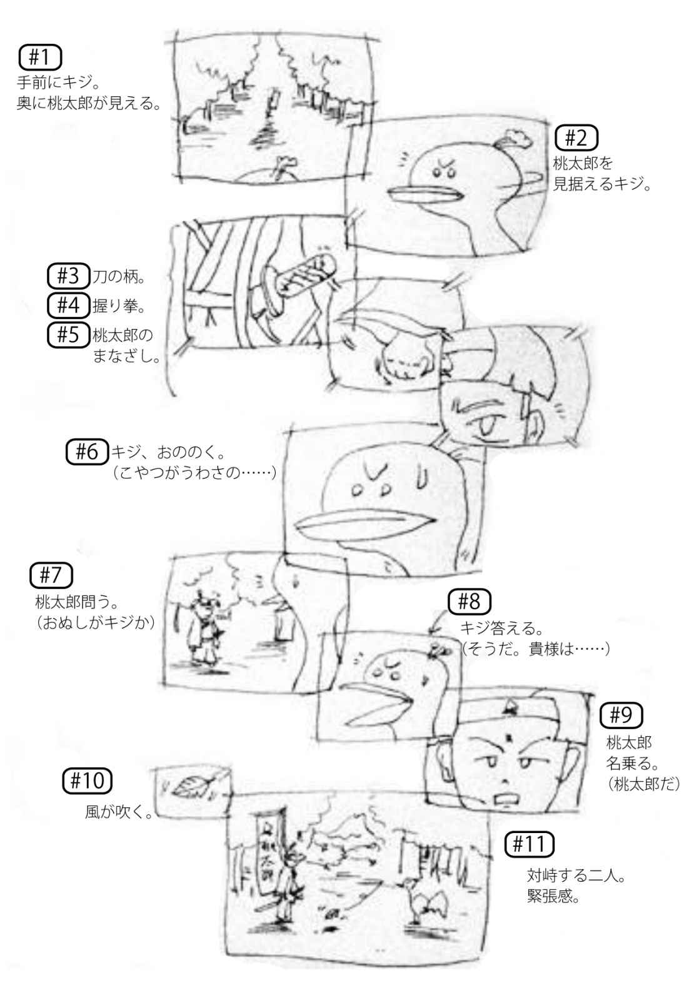
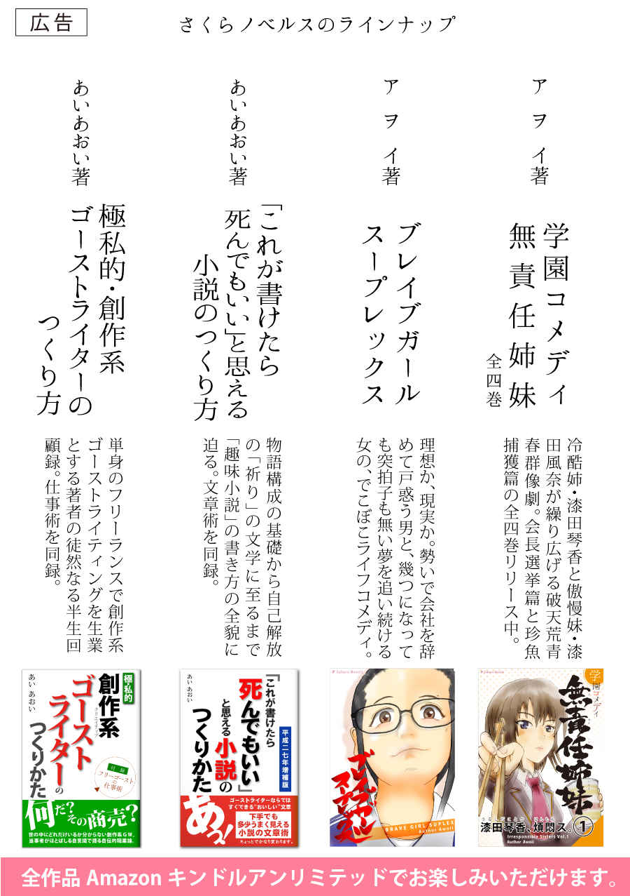

| 「これが書けたら死んでもいい」と思える小説のつくりかた＆下手でも多少うまく見える小説の文章術 | |
| あいあおい | |
| (2015) | |
平成二七年増補版
「これが書けたら死んでもいい」と思える小説のつくりかた＆
下手でも多少うまく見える小説の文章術
著 あいあおい
「金にもならない、誰に見せるわけでもない、役立つ資格につながるわけでもないのに、なんでアンタは小説なんか書いているの」
と尋ねられる時、私はいつも答えに窮する。
確かに言われる通りなのだ。
私はこれまで人生の時間の大部分を、小説を書くことに費やしてきた。だが、それで何か得をしたかと思い返しても、そんな記憶はひとつもない。いや、もしかしたら損をしてきたかもしれない。受験生をしていたころには、高いお金を払って通っていた予備校の授業中、ショートショートばかり書いていた。大学のころは他のみんなが恋人をつくって青春を謳歌しまくっている時、独り家に籠もってカリカリやっていた。
小説なんか書かずにちゃんと真面目に勉強していたら、今ごろエリート街道を突っ走っていたかもしれない。恋にファッションに青春を謳歌していれば、いまより垢抜けたアクティブな生活を送っていたかもしれない......。
私は仕方無しにこう答える。
「これはもう......生理現象です。トイレに行ったり、眠くなったり、性欲がたかまったりするのとおんなじで、書かずにはいられないんです」
「そんなに書きたいことがあるんですか？」
「いや、そういうわけでもないんですが......」
何とか答えを捻り出しても、すぐまた別の何かを問われてしまえば、また答えに窮してしまう。
おそらく、小説執筆を趣味にしている人の多くは、右と同じ状況を幾度も経験していることだと思う。
なぜ、人は小説を書くのか。
プロの作家が生活を維持するためにストーリーをこねくり回して編み上げる、いわゆる「売るための執筆」とは別に、個々人が趣味として綴る「自分のための」小説というものが存在し、しかもその多くが日の目を見ず、また、日の目を見るつもりもなく、何百何千と生まれ、人知れず消えてゆく。プロでもない人間が、実生活上何の特にもならない小説の執筆に、時間と労力の消費を惜しまないという現象は、真に不思議なものだ。
私はこれまで、下手の横好きでいくつかの小説を書き上げてきた。作品は、高校時代、大学時代、社会人以降、自分の歴史のところどころで生まれてきた。時折過去の物を引っ張り出して読み返す。すると、稚拙さや過りの多さにやや辟易するものの、それとは別に「おお」と感慨深くなることがひとつある。
「ああ、この頃はこんなことを考えていたのか」
という自分への気づきだ。
自分の作品を、書き上げられた時系列に並べてみると、現実の思い出と精神の思い出が見事に照らしあわされる。稚拙ながらに哲学じみたものを感じ始めていた若い頃。恋に悩み、仕事に惑い、自分に自信を失っていた頃。結婚し、落ち着いて世間を見渡せるようになった昨今......。自分が自分の歴史の時々に何を感じ、何を考えて生きてきたのかよく分かる。それは日記やブログといった日々録では残せない、もっと精神的な年表として、改めて自分の眼前に広がってくる。
このように振り返ると、小説は「自分の年表」を作るために執筆されているように思われるが、面白いことに、個々の作品を創作する時に、「自分の年表」を作るために書こうなんて思ったことは、一度もない。
うーん、どうして小説なんか書くんだろう。
今回このエッセーを書こうと思い立った理由は、以上のように私自身が趣味で小説を書きながら感じている不思議の原因を少しでも解明できないかという個人的な好奇心と、もうひとつ、「ぜひみなさんもこの不思議体験を味わってみませんか」とお勧めしたいためである。
確かに、小説を書くという趣味は、幼い頃からその環境になければなかなかとっつきにくい趣味だ。アタマは疲れるし、時間も掛かる。巧くいかずに苛々することも度々で、何かの拍子に人目に入って酷評でもされようものなら人間関係すら危うくなる時もある。
だが、そういった労苦を越えて書き上げた小説と、少しの時間お別れをして、数年ぶりにでも出会えたら、先ほどの私の体験のように、過去の自分と新鮮な感覚で向き合うことが出来る。この感覚は、他の何にも変えがたい、あなただけの特別な体験になる。
加えてもうひとつ。小説、なかでも私小説を著すことは、真摯な内省を促す。自分と向き合い、目を背けたくなるような自分の業を受け入れなければ、作品を編むことができないからだ。しかし、この苦しい時間から逃げずに努め、自己をとことん客観し、一つの作品と呼べるものが出来上がったとき、書き手はいつの間にか自分の業を克服している。作品の数が増えれば増えるだけ、業は乗り越えられていく。それはその人自身の成長であり、自信を醸成する。自分に目標がないとか、何のために生きているのかわからないという虚無に悩む人には、自分と自分自身の関係を修復し、前進するチャンスになる。いわば、自己啓発の作用があるのだ。そしてその書き上げられた作品は自分を乗り越えた証として、記念碑的な存在となる。
一見意味のない趣味の筆頭であるかのような小説執筆。
しかし、他の趣味では決して味わえない自分だけの世界を体験できる。
そして、ある程度「小説を書く」という趣味が恒常化し、自分と自分の作品との関係が対等になってくると、記念碑的な作品の数々が自己の内面を体系化する殿堂を築き上げ、本書のタイトル「これが書けたら死んでもいい」と思える心境に至る......かもしれない。私自身、未だその境地に至っていないから何とも言えないが。
ペンと紙と時間があれば、全然お金のかからない趣味、小説。あなただって、長い人生に一編くらい自作の小説があってもいいのではないだろうか。
小説を書こうという発想は、いったいどこからやってくるのか。
世の中にはたくさんの小説が出回っている。そしてそれらの小説には全て産みの親、つまり作家がいる。作家が「小説を書こう」と思い立つから小説は著される。小説家はみな、理由と着想があって小説を書きはじめる。
これは小説に限った話ではない。
音楽・絵画・彫刻・映画・舞台芸術・詩歌・舞踊......あらゆる芸術分野に同じことが言える。芸術にはすべて理由と着想がある。何もないところから何かが生まれるということは決してない（「何もない」ということそのこと自体を表現する芸術もあることはある。しかしそういった場合は「何もない」ということが現に在るという点に着目すべきである）。
理由と着想は、「記録したい」「誰かに伝えたい」といった表現欲求から生まれる。
表現欲求の衝動は大別して二つのパターンがある。
一つは感応による衝動。喜怒哀楽に触れ、その思いを胸のうちに秘めているだけでは物足りなく、別の形にとっておきたいと思う心境だ。久しぶりに家族が集合した時にみんなで写真を撮ろうという発想が生まれる。それは、なかなか会えない者同士が久しぶりに集結した喜びを、その時の風景を記録しておくことで忘れないでおこうとする思いである。
もう一つは思想による衝動。例えば悪政に対し許せないという思いがレジスタンス結成を図り、メンバーの意志を象徴するシンボルマークをデザインしようというような、情熱に意図がプラスされるタイプの発想である。
感応衝動と思想衝動。このいずれかが表現しようというきっかけとなる。
では、表現の矛先が小説に向かう時、人の心にどのような作用が働いているのか。
謎を解く鍵は、作り上げたいメッセージのタイプと表現媒体の特性にある。
メッセージのタイプには二つの時間と二つの状況の組み合わせ、つまり四つのタイプがある。二つの時間とは、一瞬を表すのか、一連の流れを表すのかであり、二つの状況とは、真実か、演繹かである。
このように、メッセージには性格があり、メッセージのそれぞれに、表現するにあたり最適な表現媒体がある。
さて、この中で小説は「４ 演繹・一連の流れのメッセージ」に含まれる。動機が感応衝動であれ思想衝動であれ、小説を書こうとする発想は「動的な世界を表現しようとするメッセージ」によって突き動かされる。それ以外の動機で小説に取り掛かろうとしたり、あるいは別の手法で世界を表現しようとしても、ほぼ成立することはない。
想像してみて欲しい。例えば家族集合の記念を小説で著したとする。その作品を数年後また家族が集合したときに「あの時のことだよ」と言って家族に提示しても、数年前の事実を写真ほどリアルに再現できるだろうか。また、オリジナル世界を表現したいという思いを、一瞬しか切り取らない写真や絵画で表してみても、ダイナミックかつ複雑な世界をどれだけ想像させることが可能であろうか？ 不可能ではないにしろ、この場合、効率的なのは小説である。
気をつけなければならないことは、刹那的な衝動で小説を書こうとしたり、伝えたいメッセージがどんなものなのか自分で咀嚼できないうちに文章という表現媒体を選んではいけないということだ。
例えば、ついさっき失恋の痛手があったとする。心がまだズキズキ痛む。この苦しみを早速小説にして、忘れないためにとっておこう。二度と馬鹿な恋愛をしないために......。このように自分を責めたり、相手を責めたりしているうちには、主題を据えた世界を構築し、表現することは出来ない。自分を冷静に振り返り、作品の主題を明確にした上でペンを執るべきだ。さもなくば、小説はどこかで自己矛盾を発生させ、筆者の目の前で自壊する。
自分の記念碑が立ちます。一言だけ自分の言葉を刻むことができるそうです。
さてあなたは何と彫りますか？
誰もが悩むことだろう。自分の記念碑なのだ。この碑を建てるために多くの人が動く。発起人は除幕式の準備に走り回るだろうし、石工は大きな石を苦労して運ぶだろうし、彫刻家は決して失敗の許されない作業をとてつもない集中力でこなそうとする。
あなたは碑に刻む文言に頭を捻る。
座右の銘らしく『努力は実る』はどうか。いや、記念碑建立に関わる全ての人、あるいは記念碑を立ててもらえるほど自分を偉大に育て上げてくれた親への感謝をあらわし『ありがとう』も分かりやすく良いかもしれない。しかし、せっかく彫ってもらうのだから、ちょっと意を凝らしてもいいのではないか。例えば、あなたが自分の功績を、努力を尽くした結果の賜物だと考えていたとする。「人事を尽くして天命を待った」結果だ。だから「人事天命」としよう。いや、それだけでは物足りない。あなたは功績を成し遂げるにあたり、人を大事にした。だから「人事天命」の「人」を「仁」にしよう。そして、功績は努力によって運命を変えた結果だから「天」は「転」にしよう。よし、「仁事転命」だ。さらについでに愛のイメージを増すために『仁慈転命』だ......。
あなたはいろいろなことを考える。『努力は実る』にしろ『ありがとう』にしろ『仁慈転命』にしろ、あなたは悩んだ末の言葉を彫刻家に託す。月日が経過し、文字は彫り上げられ、晴れて除幕式の日がやってくる。
大勢の観衆。あなたと、あなたに関わる大事な人たちが、記念碑を覆う白布の端からのびた紅白の紐を握り締め、
「せーの！」で幕を引く。
そそりたつ石碑に刻まれるあなたの文字。
それを目にしたあなたは、何を思うだろう......。
以上は、あなたが小説を書くにあたり、陥ってほしくないケースを紹介した挿話である。
「はじめに」で述べたとおり、小説はいずれおのずと書き手自身の記念碑となる。あなたが一編の作品を著し、数年後それを手に取り読んだとき、内容がもし『努力は実る』のように通り一遍のことしか言っていない代物であったら、きっとつまらないと感じるだろう。また、『ありがとう』のように分かりやすい内容だったとしても、単純すぎていまいち感情移入しにくいだろう。『仁慈転命』に至っては、造語に過ぎていて何のことだかわからないかもしれない。
書き手が自分で読んでそうなのだから、他人が読む場合はもっと意味不明に映る。作品は拒むかのように読者の感情移入を妨げる。その作品は記念碑どころか誰にも理解されない無縁仏の石碑となる。
このような小説を書き上げてしまうのは、誰にとっても不本意なことだ。そんな作品を生み出さないために、かつ、自他を含めた読者の胸中に何かを残すために、書き手は小説にしっかりとした「主題」を持たせなくてはならない。
さて、ここでよく言われる批判について、まずもって反論しておこう。
しばしば趣味人作家たちはこういう。
「趣味で書いている小説なのだから、何を書こうと自由だろう。あらゆる束縛のない世界を創造するのが、ぼくたちの趣味の条件だ。そしてそれがノンジャンルともいうべき純文学のあるべき姿である。他人の目など、気にするのもおかしいことだ」
こういう諸君に限って無縁仏の石碑を増産する名人ともいえる。彼らは作品に取り掛かっている時ばかりを趣味作家として楽しんでいるだけだ。時が経てば、自分の作品の最も客観的な読者となるのが自分自身であるということを分かっていない。後から読み返して恥ずかしいというケースは、自分自身の発した言葉の集まりである小説に、実態のないテーマを持たせた、あるいはテーマらしきものすら持たせなかったことから発生する不統一感が原因である。
小説を書く時、書き手はオリジナリティーのある主題を定めなければならない。いわゆるテーマ、マーケティング用語でいうところの「コンセプト」の設定だ。しかる後、世界観の設定やストーリーづくりに入っていく。
極端なことをいえば、小説とは、主題をひとつの明確な言葉に変換し、地の文のどこか一部、あるいは登場人物のセリフの片隅に登場させ、それをひときわ印象的に輝かせるために、敢えて遠回りの比喩や逆説で強調させる創作である。
主題の設定の仕方に厳然たる決まりはない。しかし、基本的なプロセスは存在する。
まずはじめに、書き手は自分の思想や感情を正確に理解することに努める。そしてその理解の中から特に強い想念をひとつだけ抽出する。次に、抽出した想念を分析し、たとえば一つの状況がどうなったら嬉しいだろうか、悲しいだろうか、怒りだろうか、と演繹する。さらにその想像を固有の切り口で解釈する。切り口は、善悪、日常非日常、利益不利益......様々だ。
これらの作業を経て浮かび上がってくる考えを総合したものが、主題となる。
内省・抽出・演繹・解釈・総合。
この五つが小説の主題を生み出すプロセスである。
ひとつの例を示そう。
たとえばあなたが今小説を書こうと思いたち、自分の中の最も深い感情が「感謝」だと気づいたとする（内省・抽出）。「感謝」は一般的に幸福なイメージを持つ言葉だ。「感謝」は親兄弟のみならず友人も含む感情で、あなたはこの気持ちが続く限りみなが仲良くしていくだろうと想像する。しかし、感謝の先に時として大きな決断を迫られる時があるとも気づく。心臓を患う命の恩人を救うために、自分の脳死状態の息子の心臓を移植せねばならない、など（演繹）。
「ぼくたちが日ごろ『感謝』という言葉を微笑みをもって迎えるのは、『感謝されること』ばかりを想像するからだ。本当に『感謝する』ということは並大抵のことではない。命を差し出しても尚あまりある報恩の願い、それが『感謝する』ことのできる人の尊厳なのかもしれない」（解釈）
あなたは『感謝』という言葉に静かなたたずまい、高潔さを感じる。色で言えば紫だ。あなたは主題を『紫の尊厳』と定める（総合）。ここまで思いをめぐらすと、おのずとストーリーが見えてくる。（......特に取り柄のない貧しい男がいる。彼はとあるきっかけで人生を浮上させるチャンスを掴むが、かつて世話になった人のピンチを知り、チャンスに乗るか、恩人を助けるかの選択に迫られる。彼は恩人を選ぶ。結果、彼は相変わらず貧しいが、報恩を叶えた充実感から人間としての尊厳を守り抜く......等々。）
ところで、あなたはこれまでの人生で『紫の尊厳』という言葉を聞いたことがあるだろうか。以上の例文を読むまできっとなかったことだと思う。当然である。私が主題の大切さを説明するために作り上げた言葉なのだから。
主題のオリジナリティーは、作品のオリジナリティーに直結する。また、できるだけ分かりやすい言葉を使った主題は、作品内での読者の誘導力に優れている。例に出した『紫の尊厳』を使って説明するならば、『紫』という単語と『尊厳』という単語、いずれも世間で普通に流通している単語だが、組み合わせると新鮮で、耳新しさが豊かな想像を促す。とりわけ色を表す単語は、一般的な色イメージと絡み合い、何がしかの予感を与える。
さらに主題は小説執筆時の舵取りの役も担う。
何日もかかって小説を書いていると、次々に新たな発想がうまれ、話がどんどん拡大し、収集がつかなくなる場合がある。挿入したエピソードが伝えたい主題から逸脱していないか。あるいは本当に言いたいことが、放埓すぎるストーリー展開でぼやけていないか。このような時に、主題がしっかりしていると軌道修正しやすい。また、思いの強い主題は、書き手が大長編を書き続けるにあたり、途中でくじけないための合言葉にもなる。
主題は、作品のもつ記念碑的な存在感の要として、ストーリー構成の芯として、執筆中の作品のぶれ防止として、重要な役割を持っている。
小説を書こうと思い立ったら、きっちりと決めて欲しい。ペンを持つ前に。
『創世記』の冒頭は、このような書き出しではじまる。
初めに、神が天と地を創造した。
地は形がなく、何もなかった。
やみが大いなる水の上にあり、神の霊は水の上を動いていた。
そのとき、神が「光よ。あれ。」と仰せられた。すると光ができた。
この後、神様は五日間かけて世の中に海と陸地、昼夜をつくり、植物・動物を生みだした。六日目に自分の似姿である人間をつくり、七日目に休んだという。
『創世記』は神話であり、真実かどうかを議論するのは極めて野暮なことだ。しかし、とりあえず世界の前提として思いを馳せると、神様の七日間事業から現在に至るまで、気の遠くなるような時が経過していることに気づく。連綿と続く歴史の道程には多くの人物が生まれては死に、事件があり、国家の興亡があり、衰退があり、進歩があった。
歴史という壮大な物語は変幻自在で、わたしたち人間にその展開は覚束ない。それでいて時計仕掛けのように辻褄が合う。「事実は小説より奇なり」という言葉が示すように、この世の出来事は全て唯一無二の驚くべき作品なのである。
神様と世界と人間。このシチュエーションは小説の創作のあり方そのものだ。
つまり神様は作家である。神様ははじめに「光よ。あれ。」という主題を立てた。その後、五日かけて世界のあるべき姿を準備し、しかる後、世界の登場人物である人間を生み出し、今日まで歴史という物語を紡いできた。
神様が五日間を費やしてつくりあげた世界は、人類が犯すことのできない厳しい限定要素を持っている。それは自然の存在・時の不可逆性である。この限定要素があるために、人類という登場人物はその枠内でしか動くことを許されない。それゆえに、人類は葛藤し、考え、進歩しようと努力する。この労苦が後世、歴史を学び知る人に感動を与える。
逆に言えば、感動を生むためには、世界と登場人物との間に摩擦が必要であるということだ。
以上神様から学ぶに、小説における世界観づくりとは、小説の舞台となる時代と空間を限定し、作品の中に一定のルールを設けることである。
世界観づくりで考えるべきことは、読み手と書き手の共通認識・リアリズムの醸成の二つである。前者は読者が作品を理解する上で必須であり、後者は演出の基礎となる。
読み手と書き手の共通認識は、それがなされない限り、作品の中で共感を育み得ない。共感のない作品は感動を生み出すことができず、つまりは誰にも理解されない孤独な無縁仏の石碑となる。
書き手という生き物は自分で言葉を選び、意味を紡ぐという意味で、永遠に主観的な存在である。一方、読み手は通常、書き手の経歴や意図といった予備知識を持つことなく作品にのぞむ。そのため、作品があまりに書き手の独りよがりで、非常識な世界観の上にたっていると、その作品がバラバラで意味不明に感じられる。たとえば、歴史小説を謳われた全二〇〇ページの作品を読んでいたとする。読み始めて一〇〇ページまでは、史実に準拠するリアルなストーリーがシリアスに展開していた。しかし、一〇一ページ目で突然ＵＦＯがあらわれた。一二〇ページ目に「め」組の消防車が走り出し、一五〇ページに携帯電話が登場した......。このように、特に必然性も論拠もなく時代設定が滅茶苦茶に飛ぶような作品は、読み手に疲れと呆れを生じさせる。ついていけなくなるのである。また、いわゆる「夢オチ」は駄作演出の代表のように言われるが、その理由は、一つ、ずっと現実だと思っていた話が、そうではない世界の話だったと知らされることの違和感と、二つ、ストーリーの核心が「夢」という何が起こっても許される世界での話であることの失望感で、それらが読み手に一様につまらなさを与えるためである。
世界観は、誰もが理解可能な時間・空間を設定するべきである。そしてそれを無節操に飛び越えるような世界観は、極めて空しい作品に仕上がる。
世界観の担うもう一つの役割は、リアリズムの醸成である。リアリズムの醸成は読み手を作品世界に引き込むための基礎的な役割を果たす。
リアリズムとは「現実主義」「実在論」。それは志向するという立場から、リアルそのものではなく、リアルに限りなく近づこうとする在り方である。
なぜリアリズムの醸成が必要なのか。
それは、読み手は書物から自分の知っていることしか知ることができないためである。
知らないことを知らしめるためには説明を施すしかない。
たとえば、作品の中に「東京」と記述されていたとしよう。東京という地名は日本人ならほとんど全ての人が知っている。読み手の脳裏に浮かぶ東京は、高層ビルだったり、浅草の雷門だったり、国会議事堂だったり、人さまざまだろう。
このように、世界観に実在する事象を使用する場合、ストーリー内で補足程度の説明をすれば万人の理解を得ることができる。
だが、架空の世界を表現したい場合は、それだけではすまされない。
「ゴンドネラの浮揚世界では、百十七人の妖精がいにしえの音楽をマヌの午後に演奏すると、黄金のフィーロムがはじまる」。
ここまでくると、緻密すぎるくらい緻密に世界観を練り上げて説明しなければ、誰一人として理解不能だ。書き手は「ゴンドネラの浮揚世界」の自然・地理・歴史・文化、その他全てを、辻褄を合わせながら一切合財考え出さねばならない。それは『創世記』の神様の五日間とほとんど変わらない難事業である。
世界観に架空の事象を組み入れるのなら、書き手はその世界の細部にいたるまで緻密に創造し、かつ、誰もが理解できる言葉に翻訳する。そしてその世界が本当に実在するかのような存在感を与える。リアリズムの醸成とは単なる嘘をフィクションに格上げする作業である。この作業をいい加減にすませた状態でストーリーを書き上げたとしても、読み手は架空の世界観をフィクションとはとらえずに、チープな嘘としか感じない。
ストーリー執筆の際も、架空の言葉の意味が自然と読み手の知識として浸透するよう、細心の注意を払い世界観を表現する。この表現のスマートさが、さらに良質なリアリズムを醸成する。たとえば先の架空世界ならば、物語の導入に「ゴンドネラの神話は、男女の神の悲恋からはじまる」という世界観を差し添える。すると、誰もが感覚的に知っている「神話」「男女の悲恋」という言葉と未知の単語「ゴンドネラ」がリンクし、読み手を自然に物語の世界観に誘うことができる。
先の項で解説した主題を作品の「魂」とするならば、世界観は「肉体」である。どんなに「肉体」たる世界観が精緻に構築されていたとしても、主題という「魂」の欠落した作品に感動は生まれない。逆に「魂」が優れていながら「肉体」が貧弱でも事は同じだ。
先の『創世記』のエピソードに話を戻してたとえるならば、もし神様が一日目に「光」という主題を決めなかったら、人類は光を求めて生きようとする心を持たずして、どうして感動的な歴史を紡ぎ上げてこられたことだろう。おそらく獣のように種を絶やさぬことだけに執着する単調な歴史に終始したに違いない。逆に光という主題が明確であっても、それを実現すべき世界が無節操だったら、人類は自身の能力をもてあまし、放埓に陥ったことだろう。
主題と世界観が両立し、初めて作品は感動の可能性をはらむのである。
普通、書き手は主題が決定した後、世界観を創造する。修練を積んだ作家は、時に世界観に照らし合わせた主題を後付けすることに成功するが、それは極めて稀なことで、原則としてわたしたち趣味の書き手は主題設定の後に世界観を創造すべきである。
このように言うとまたも多くの趣味作家たちは口を揃えて非難するかもしれない。「作品の世界観は、わたしたちの創造力において常に自由だ。いつだって書き手主導でいい。だからこそ、書き手は作品の中で神たりえるのだ」と。しかし、よく考えて欲しい。小説執筆という作業に欠かせない、文字というものの存在意義を。文字はそもそも他者に何かを伝えるための記号である。元来コミュニケーションの道具である文字を使って、他者に自分勝手で支離滅裂なメッセージを伝えようとすることは、構造論的に矛盾していないだろうか。わたしたちが趣味とはいえ文字・言葉を使って行なわんとする表現欲求の根本にたちかえれば、先の趣味作家の発言がいかに思慮の足りないものかよく分かる。そして、書き手自身も読み手であることを忘れないでほしい。自分自身で書いたものを後になって読み返し、驚くほど意味不明であった時ほど、自分が情けなくなることはない。
主題が決まり、世界観を設定し終えた書き手の頭の中には、おそらくすでに主人公の面影が生まれていることだろう。多くの場合、主題決定、世界観設定、登場人物の選定はほぼ同時に行なわれる。当然といえば当然である。人と世界は結びついている。世界を抜きに人を語ることはできないし、逆もまた真、だ。リアリズムの側面から考えても、世界観を考えるプロセスにおいて、登場人物を描写しておくほうが辻褄を合わせやすい。
しかし、ちょっと待ってほしい。
登場人物が物語の中でどのような役割を持つべきなのかを考えもせず、無責任に人格を生み出していいのだろうか。
それは絶対にノーだ。
盲滅法に生み出された登場人物は、作品に弊害をもたらす。陥りがちなのが次の二つのケースだ。一つは書き手のご都合主義による増員。たとえば主人公にとある重要情報を知らせるためだけに、たった一度だけ、メッセンジャーとしての役割を持つ人物を登場させたりする場合。妙に存在が目立ち、ストーリー上に無用な関心をもたらす。もう一つは意図せぬ超人の発生。書き手がひとりの登場人物にあまりに多くのことを任せたり語らせたりするために、作品を書き上げてみるとその人物が異様に万能になって目立っているパターン。やはり存在感が突出し、読み手に物語の主題を感じにくくさせてしまう。
できるだけ少ない人数で登場人物をまとめあげること。できるだけ少ない情報で作品をしあげること。この二つが守られているほど、作品は分かりやすい。私は最少人数で構成される物語の主要登場人物を「キャスト（出演者）」と呼ぶことにして、その他の端役的な登場人物（エキストラ）と区別している。
キャストを考えるときにどうしても先走りがちなのが主人公の設定である。
主人公は物語の中心だ。書き手としても最も感情移入したい存在だし、花をもたせたいと考えてしまう。そして特に根拠も無く主人公の視点をそのまま地の文にした一人称小説が著される。
その前に考えてほしい。その手法が主人公を読み手に印象付ける最良の方法なのかどうかを。
誰もが知っている作品から一つの例を示そう。
アーサー・コナン・ドイルの「シャーロック・ホームズの冒険」である。
この作品の主人公はシャーロック・ホームズである。そして助手であり医師であるワトスン氏。彼は脇役であり、物語の語り部である。ホームズの名推理と事件解決は、二、三の例外作品をのぞき、全てワトスン氏の視線で語られる。読み手はワトスン氏の視線を借りてホームズの行動を見守る。ホームズの謎めいた部分・突如活発になる部分、それらの全てがワトスン氏というフィルタのおかげで、メリハリをもって映し出される。主役でない者が語るからこそ表現できる面白さなのである。これがもしホームズの語りによる物語だったらどうだろう。名探偵の推理はそのプロセスにおいて全て読み手の前で鮮明になり、事件の意外な解決やホームズ特有の洒落はまったく輝きを失うことになる。
「伝えたいもの」「見せたいもの」が何なのか。書き手はそれをよく整理してキャストを選出し、その中から最も適当な人物を主人公として選ばなければならない。
キャストの作り方や人数、あり方などに、もちろん決まりはない。
これが正解というわけではないが、キャストの創造と配役は、次の三点に沿って行なわれれば、概ね失敗はない。
一、創造しうる人格を羅列する
二、主題を誰に体現させるか――第一次オーディションの開催
三、主題に問いかけるのは誰か――第二次オーディションの開催
設定した世界観の住人としておかしくない人物像を複数人分考える。年齢・性別・職業・家族構成・性格を、思いつくままに設定する。キャスト候補リストをつくるのだ。大体十名分くらい用意できるとよいだろう。
ここで重要なのは、性格の設定をしっかりしておくこと。
なぜなら書き手は自分の理解できない人格を創造し、動かすことはできないからだ。
たとえばニヒリストを登場させようと思って「誰も理解できない謎めいた性格」の人物を考えたとする。だが、そんな性格の人物を書き手自身想像できるだろうか。誰にも理解できないのだから、書き手にも理解できるわけがない。こういったキャストのメンタリティーは、読み手が作品を読んだ結果感じるもので、書き手はやはりそのキャストの内面をしっかりと打ち立てるべきである。
とはいえ、書き手がストーリーに取り掛かる際、準備したキャストは、本筋に合わせて若干の修正をうける。よって、つくりあげる人物像は、実在する人間の人格デッサン程度で構わない。あるいは書き手の友人、ひいきのスポーツ選手や芸能人、勤め先の先輩後輩など、誰かのプロフィールや性格を借りて人物像をつくりあげるのも一つの手である。
最後に、それらの人物像の相関関係を簡単に設計しておく。友人・同僚・恋人・家族・奴隷・元恋人・恋敵などなど。人物に身分を当てはめておくと、のちのちストーリーを構成する際に展開をつくりやすい。もちろんこれも、本筋に合わせて後から修正をすることが可能なので、おおまかでよい。
複数名分用意したキャスト候補リストをいったん机の隅に置く。そして次に、主題に立ち返り、伝えるべきメッセージは何だったかを振り返る。
ここではわかりやすいように、本書「刻むべき言葉をみつけよう――主題の設定」の時に例示した『紫の尊厳』のケースで解説する。
『紫の尊厳』の主題構成プロセスは以下の通りだった。
たとえばあなたが今小説を書こうと思いたち、自分の中の最も深い感情が「感謝」だと気づいたとする。「感謝」は一般的に幸福なイメージを持つ言葉だ。「感謝」は親兄弟のみならず友人も含む感情で、あなたはこの気持ちが続く限りみなが仲良くしていくだろうと想像する。しかし、感謝の先に時として大きな決断を迫られる時があるとあなたは気づく。心臓を患う命の恩人を救うために自分の脳死状態の息子の心臓を移植せねばならない、など。
「ぼくたちが日ごろ『感謝』という言葉を微笑みをもって迎えるのは、『感謝されること』ばかりを想像するからだ。本当に『感謝する』ということは並大抵のことではない。命を差し出しても尚あまりある報恩の願い、それが『感謝する』ことのできる人の尊厳なのかもしれない」
あなたは『感謝』という言葉に静かなたたずまい、高潔さを感じる。色で言えば紫だ。あなたは主題を『紫の尊厳』と定める。
このいわゆる「創作メモ」的なテキストの中で、主題『紫の尊厳』を指し示す核心的な部分は「命を差し出しても尚あまりある報恩の願い、それが『感謝する』ことのできる人の尊厳」という箇所だ。
これをどのような人物によって体現するか。
ここで再び、先に編み出したキャスト候補リストに目を向ける。設定した人物の中から、誰を主題の体現者にするか、書き手の脳裏でオーディションを開催するのである。
キャストの年齢・性別・職業・家族構成・性格を改めて一人ずつ分析し、誰が一番主題の持つメッセージ性を表現できるか、そのシーンを思い浮かべながら考える。そして主題の体現者を選定する。
この時注意しなければならないのは、選び出した人物＝主人公という決定は、まだ下さずにおくことだ。はやる気持ちを押さえ、オーディションは次の選定にうつる。
主題の体現者を選定しても、キャスト候補リストはまだ捨てないでいてほしい。主題の体現者を取り囲む主題プロセスの体現者を四名選出するのに使うからだ。
どういった四名を選出すればいいのか。そこで思い出してほしいのが、主題を決定するプロセスで紹介した五つの要素である。
内省・抽出・演繹・解釈・総合。
これらのひとつひとつに、キャストをあてはめていく。
最後の「総合」は、先に選出した主題の体現者なので、それ以外の内省・抽出・演繹・解釈を担当する四名を選ぶ。
再び『紫の尊厳』の例を用いて説明すると、四人にはそれぞれ次の役目が任されることになる。
一人目（内省）：（例示なし）心のうちを振り返らせるきっかけ役。
二人目（抽出）：最も深い感情が「感謝」だと気づく・気づかせる役
三人目（演繹）：感謝の先に決断を迫られる時があると気づく・気づかせる役
四人目（解釈）：「感謝」は並大抵のことではないと気づく・気づかせる役
物語の構成によっては、一人の人物が複数項を兼任したり、それぞれの項目を担当する人物のいくつかが「モノ」「コト」になったりする。こういった設定のディテールは、ストーリーを編み出す際に変更するとして、とりあえず、これらの配役を全て決定する。
二度にわたるオーディションの結果、五名のキャストが選出された。
多くの場合、最終的に「主題の体現者」が主人公を任されることになる。しかし、先に例示した「シャーロック・ホームズの冒険」のように、演出的側面から主人公の役割がどの程度まで及ぶか、現状で判断をくだすのは尚早である。
主人公の決定はストーリーの大まかな構成ができあがった後に決定することにして、本書は小説制作の次のプロセスにうつるとしよう。
「主題」「世界観」「キャスト」が出揃ったら、いよいよストーリーの構成にとりかかる。『創世記』の神様の仕事で言えば、六日目が終了したということだ。神様は七日目に休憩をとったということだが、私はそれを鵜呑みにできない。神様だってきっと、明日から創ったものたちをどのように配置し、動かして、世界の歴史を紡ごうか、いろいろと気になって仕方なかったはずだ。
それにしても七日目をそのような形で一日過ごすのはよいことだと思う。というのも、私たち趣味作家が小説を書くにしても、「主題」「世界観」「キャスト」が揃ったからといって早速書き出そうとするのは、ちと頭が熱過ぎる。きっとロクなものはできないだろう。ここはやはり休憩して、じっくりあれこれ考えてからストーリー執筆に望むのがよいと思う。
さて、ストーリーとは、さまざまな要素が複雑に入り組んだものである。これまで本書では、小説のつくりかたをまるで料理のレシピのように作業手順を踏んで紹介してきた。しかし、ここからはそうはいかない。小説は多元的なものだ。マニュアル化されたノウハウで紡ぎあげられた小説は、単調で、結果、厚みのないものに仕上がってしまう。巷には多くの文芸作法書が出回っている。私自身これまでさんざんそういった代物を読み漁ってきたが、結局のところ、文章の存在意義からの「主題明確」論か、文法論に終始しているばかりだ。私はそれらを読んで何かが学べたという気がしたことは一度もない（だからこそ本書をしたためようと決意したほどである）。
よって、ここからの章は、小説のストーリーについて、従来の形式を廃し、以下の二つに分けて解説していきたいと思う。
一つは小説の構成論。小説のストーリーがどのように組み上げられ、それがどのような意味づけによってなされるべきかという、いわば演劇や映像の表現理論に近い内容である。もう一つは演出論。ミニコラム形式で、ストーリー演出のさまざまな要素を紹介する。
正直言って、私自身趣味作家レベルだ。何かが正しく語れるような気は一つもしない。だが、本書をしたためることで、何かひとつ、ほんの小さなことでもいいから、文芸の核心的なものを垣間見ることができたらいいと思うし、本書の読者にも同様のことを願っている。
書店を訪れると毎週さまざまな新刊が発表され「あたらしい物語」が世に生み出されている。ＴＶをみればドラマが放映されている。映画も封切られている。
これらの創作は人々に様々な感情をもたらす。特に、私たちのように小説を書く習慣を持つ種族は、「どうしたらこんなストーリーを思いつくのだろう」という、一般とは違った驚きを覚えるものだ。
実際、作家はどのようにしてストーリーを考えているのだろう。
本書は先の項で「主題のつくりかた」「世界観の創造」「キャストの選定」を論じ、書き手が作品を生む際の基本的なスタンスを紹介してきた。私たちはこれからそれらの材料をいかに料理するかを考えるわけだが、それに先立って、その料理人たるストーリーテラーとはどんな生き物で、どのようにしてストーリーを編み出すのかを、まさに料理人のたとえを用いて解説しようと思う。なぜなら料理とは、素材を加工して他者を喜ばすという点において、どんな芸術よりも小説に近いクリエイティブだからである。
料理人には二つのタイプがある。一つは素材の良さを最大限に引き出すタイプ、もう一つは求める味覚を定め、その味を追求するタイプである。
前者、素材の良さを引き出す料理人は、食材の性質に精通している。寿司屋であれば、一匹の魚を見ればどこの海でいつごろ獲れたどんな魚であるかが分かる。また、魚の鮮度を察知し、どのような加工をすることが一番有効であるかを知っている。
一方後者、味の追求をする料理人は、たとえば今日獲れた一匹の魚に合う食卓を考えるにあたり、最適な味覚・食感・香りを探し出す力に秀でている。添え物の野菜は何がいいか、ワインは赤か、白か。それらを分析し、レシピを制作し、魚とバランスのよい食卓を提供する。
両者の料理は「魚」の味を中心に織り成される。料理人はその主たる素材から離れることは許されない。これは小説でいうところの「主題」である。
しかし、両者には特徴的な違いがある。
それは、素材の良さを引き出す料理人は「深める」専門であり、味を追求する料理人は「広げる」専門である、ということだ。もちろん、「深める」タイプがまったく広げないわけではなく、逆に「広げる」タイプがまったく深めないわけではない。注目すべき点はその比重の掛け方で、同じ「一匹の魚」を俎上で相手するにあたり、この方向性の違いは大きい。
「深める」料理人は、食材に関する多くの知識を持っている。そしてその知識の裏付ける真実が、そのまま料理の確実性に結びついていると信じている。
「広げる」料理人は、味への好奇心に優れている。異なる食材の魅力を掛け合わせることで生まれる新たな「おいしい」の可能性を信じ、料理の無限性を信じている。
食材の内奥を極めるか、外に向かった可能性を求めるか。この考え方をそのまま小説の書き方に移しかえると、「主題」のベクトルを内側に向けるか外側に向けるかという二つのスタンスがあらわれてくる。
つまり、ストーリーとは、その目的性として、主題を深めるか広げるかのどちらかだ。
書き手が小説を構築するために一番はじめに見出した主題。それがどのような思いによって決定されたかを振り返れば、どちらのベクトルを採用するべきか、おのずと見えてくる。
「広げる」か「深める」か決まったら、ストーリー制作はいよいよ具体的な段階に突入する。
とはいえ、いきなりペンを執って原稿用紙に書き出すのではない。そんなことをすれば、ストーリーは暴走し、書き手が一番言いたい事を言えないまま、無茶苦茶な終わり方をするだろう。それならまだいい。きっと作品は頓挫する。
そういった状況を避け、もっとも効率的な執筆を運営するために、シノプシスの制作をお勧めする。
シノプシスとはプロット（あらすじ）をわかりやすくまとめた指示書のことで、通常「箱書き」とも呼ばれる。一枚の紙に起承転結をあらわす四つの四角形（箱）を描き、その枠の中にそれぞれ何が行なわれるかを記す。もちろん実際はいくつもの箱を連ねてシノプシスに落としこみ、プロットを形成する。
シノプシスをつくるということは、ストーリーを状況単位で分節することを意味する。この分節された状況のことを「シーン」という。シーンは数珠繋ぎになり、順序をなす。この順番のことを「シーケンス」という。
シノプシスがいったん仕上がると、今度はその内容を精査し、シーンを修正したり、シーケンスを入れ替えたり、全体の見直しを行なう。それらの作業が終了し、ようやくストーリーの執筆に入る。ストーリーは、完成したシノプシスを忠実に追いながら執筆していく。
シノプシスは次の順序に沿って組み上げる。
一、クライマックスシーンを考える
二、プロローグシーンを考える
三、クライマックスとプロローグを結ぶシーケンスを考える
四、エピローグシーンを考える
五、キャストの設定を修正する
六、全体を見直す
クライマックスとは、ストーリーが最大に盛り上がる場面のことで、書き手の思いが読み手に如実に伝えられることを意図する、物語の核となるシーンである。
書き手はシノプシスに取り掛かる以前に取り決めた主題・世界観を踏まえ、主題を担当する（第一次オーディションを通過した）キャストを中心に、その状況を考える。
本書・主題解説の箇所で、私はこのように述べた。
極端なことをいえば、小説とは、主題をひとつの明確な言葉に変換し、地の文のどこか一部、あるいは登場人物のセリフの片隅に登場させ、それをひときわ印象的に輝かせるために、敢えて遠回りの比喩や逆説で強調させる創作である。
何らかのシチュエーションを用意し、そこでキャストに何を言わせるか、あるいは何を聞かせるか、感じさせるか。その結果、どのような変化が起こるか、どのような変化を読み手に予感させるか。
クライマックスシーンということで、書き手の中に気負いがうまれるかもしれない。だがまだシノプシスの段階だ。主題だけ明確に位置づければ、細かいことは最終段階で見直せばよい。
プロローグとは、物語の導入である。小説はしばしば回想シーンや夢などからはじまる。この手法は演出効果を狙ったやり方であり、もちろん重要なのだが、シノプシス制作の初期段階ではまだ差し控えておき、とりあえず時系列に沿った物語の純粋なスタートを考える。キャストの相関関係と世界観をうまく絡めた導入がよい。
物語の最初としてお勧めする工夫は、「モノ」を「コト」化する作業だ。例えば、失恋を扱う場合、「失恋した」だけでは読み手を惹きつけられない。ところが「失恋してラジオに投稿したら放送作家にスカウトされた」とか「失恋して僧侶になった」など、失恋という動きのない状態にプラスアルファの変化をつけると、読み手をグッと作品に惹きつけることができる。物語のはじめだから起承転結の「起」だ、と固定化するのではなく、導入で一気に「起承転」まで運ぶのである。いわゆるツカミの効果がある。
物語のはじまりと最大のヤマ場をつなぐストーリーを考える作業である。リズムとバランスに配慮して考えなければならない。頭でっかちのプロローグや主題を喰ってしまうような展開は避けたい。
クライマックスを盛り上げる助走としてのシーケンスは、起承転結をベースに作り上げる。
起承転結の例文として人口に膾炙している頼山陽の俗謡がある。
（起）京都日本橋 糸屋の娘
（承）姉は十八 妹は十六
（転）諸国諸大名は 弓矢で殺し
（結）糸屋の娘は 目で殺す
起承転結の「転」は、展開の「展」としてもよいだろう。「起」で振られた話題を「承」が広げ、「転（展）」で一旦話を切り替え「結」で話にオチをつける。古来わびさびを芸術の主眼としていた日本には「序破急」という三段展開の構成法も伝わっているが、これにしてもさらに分析していくと、やはり起承転結のカタチをなしている。
ところが小説・映像・舞台など、ストーリーを追いかけるタイプの芸術表現が、起承転結のたった四つの展開で終わることなどほとんどない。そこでいろいろな物語を分析してみると、「承」と「転」を幾度も繰り返して構成されていることが分かる。
たとえば誰もが知っている昔話「桃太郎」は、次のようになっている。
（起）おじいさんとおばあさんがいる。
（承Ａ）おじいさんは芝刈りに、おばあさんは川へ洗濯にいく。
（転Ａ）おばあさんが川で桃をひろう。
（承Ｂ）桃から桃太郎がうまれる。
（転Ｂ）月日が流れ、鬼が悪さをしている。
（承Ｃ）大きくなった桃太郎が鬼退治を決意する。
おじいさんとおばあさんにきびだんごをもらう。
（転Ｃ）きびだんごの縁でイヌ・サル・キジが仲間になる。
（承Ｄ）船に乗って鬼が島へ。
（転Ｄ）鬼退治。
（承Ｅ）鬼が降参。
（転Ｅ）金銀財宝を手に入れる。
（結）桃太郎の帰還。平和が訪れる。
このように「桃太郎」は十二のシーンに分解できる。内容をよく見てみると、「桃太郎」では「承」と「転」が交互に五度も繰り返されている。「承」と「転」はそれぞれ同じアルファベット同士結びつき、「起」となって、次のアルファベットの「承」に話をわたしている。
ストーリーを分解することで、意外な事実も浮かび上がってくる。「（承Ｂ）桃から桃太郎が生まれる」は、いかにも「転」のような展開だが、ストーリー上は「承」の役割を担っている。このシーンの「承・転」両方を感じさせる中身の濃さが、昔話「桃太郎」に最大のインパクトを与えている。子供用絵本のほとんど全てがこのシーンを表紙にしているのもうなずけるというものだ。
「桃太郎」という昔話の主題が何なのかは不明だ。なにぶん昔話。おそらく子供に分かりやすく勧善懲悪を諭すために因果応報の教えを借りて創作したのだろう。だとすると、主題は「悪を滅ぼせば見返りがある」ということで「（転Ｄ）鬼退治」から「（転Ｅ）金銀財宝を手に入れる」あたりがクライマックスなのだろうか。しかし、どう考えても一番印象的なのは「（承Ｂ）桃から桃太郎が生まれる」、その次が極めてお伽話的な「（転Ｃ）きびだんごの縁でイヌ・サル・キジが仲間になる」の箇所だ。つまり、もし本当に「悪を滅ぼせば見返りがある」が主題だったとするならば、この創作は失敗していると言える......かもしれない。「（起）おじいさんとおばあさんがいる」と「（転Ｅ）金銀財宝を手に入れる」の二点をしっかりと決め込んでシーンを創作し、シーケンスを組み上げれば、因果応報を基調とした勧善懲悪のメッセージをもっと効果的に伝えられたことだろう。
プロローグとクライマックスという二つの点を結ぶ線に、リズムとバランスを考えて「承」と「転」を置いてゆく。決められた世界観を逸脱せず、キャストの相関関係を微妙に調整しながら、『創世記』の神様になったつもりで挑んでほしい。ストーリーのベクトルも忘れてはならない。「広げる」なら広げて、「深める」なら深めて。ただ、「桃太郎」のケースのように主題を喰ってしまうことのないように。
プロローグからクライマックスの間のシーケンスが仕上がったら、エピローグシーンを考える。エピローグとは物語の最後のシーンである。書き手と読み手の間のコミュニケーションが終わり、読み手を現実に返す「別れ」の場だ。
このシーンの目的は、クライマックスシーンで発信した主題の余韻を、読み手の中に息づかせることといってよい。
しかし、実際のエピローグ制作は、ストーリーを執筆する過程で行なわれることが多い。ストーリー全体の「結」部分を引き受けるエピローグは、そこに至るまで幾度も繰り返される「承」と「転」の全てを受けるシーンである。よって極度の辻褄を要求される。書き手がどんなに完璧なシノプシスを作り上げていたとしても、ストーリーを綴っている途中に巻き起こるさまざまな着想、展開、キャストの相関関係の変化により、エピローグは在り方が限定され、変更せざるをえなくなるのである。
だから、エピローグはシノプシス制作の段階において綿密に決定しておく必要はない。ただ、ある程度の設定を用意しておかなければ、書き手はストーリーを書き収めるタイミングを失ってしまう。するとエピローグは冗漫になり、読み手の中に作品の余韻を印象付けることができなくなってしまう。
エピローグはプロローグとクライマックスの二点を結ぶ線の延長線上にフェイドアウトする程度に設定することをお勧めする。
シノプシスを制作するプロセスで、キャストは大まかに配置され、それぞれの行動も大体決定したことと思う。おそらく、最初にキャストを創りあげた時とは若干人物像が異なってきているだろう。おとなしめの性格を意図していた人格が、物語後半に不自然に活発になっていたり、血気盛んな人格が、全体的に妙に落ち着いていたり。
シノプシスの中でのキャスティングを改めて見直し、キャストの人物設定に少し手を加えよう。
さらに、必要であればキャストの増員や削減もこの時にやっておくこと。ストーリー執筆に入ってからの増員・変更は、不可能ではないが作中コントロールしづらくなるのでおすすめしない。
キャストの修正が終了し、全員が役に板ついたようであったら、いよいよ最後に主人公を決定する。
「えっ？ もう意中の人がいるのですが......」という声があがることだろう。もちろんその人が主人公でも構わないのだが、ここでよく考えてほしい。設定したキャスト全員の視点になって、ちょっと物語に参加してみてほしい。実は一番主題を伝えやすいポジションにいる人格が別にいたりすることがよくあるのだ。シャーロック・ホームズ作品におけるワトスンのように。
書き手は構成を作り上げる際、キャストの一人に恋をしがちだ。この恋に陥ってしまうと、作品は主観的になり、プロットが空転しがちになる。キャストへの愛着は大切なことだ。しかし、ストーリー執筆の時まであからさまな恋は我慢しよう。シノプシス制作時は全員に平等に愛を注いでほしい。
いよいよ最終段階。つくりあげたプロットをもう一度見直して、ストーリーの流れを固めよう。
やることは二つある。
ストーリー内で巻き起こる出来事の辻褄があっているかどうかの確認と、ストーリーをもっと深みのあるものにするための演出の試みだ。
辻褄の確認では、出来事の展開とキャストの所有情報に気をつける。今一度すべてのシーンの出来事をチェックしなおそう。ストーリーの中で巻き起こる出来事の帰結に論理性があるか、大事な要素が抜けていないか。あるいは、とあるキャストが知らないはずの情報を所有し、話したり行動したりしていないか。書き手はしばしばこのミスを犯してしまう。しかし執筆中は作品に入り込んでいるので気づかない。小説を書き終えて人に読ませ、ミスを指摘されて初めて誤りに気づく。だが時すでに遅し、だ。たった一つの小さなほころびが、ストーリーの辻褄を破綻させ、リアリティーを消滅させ、作品全体を駄目にしてしまう。執筆に入る前の今ならまだ間に合う。早期発見・早期治療でほころびをただそう。
ストーリーに深みを持たせる演出の試みは、シーケンス（シーンの順番）を並び替え、プロットに立体感をかもしだす作業である。
シーケンスを並べ替えることで、作品内の時間経過をコントロールし、プロローグとクライマックスの距離を近づけることができる。また、回想シーンの導入など、作品内の時間経過を二重に構成することで、キャストとストーリーに厚みをもたすことができる。
いずれも主題を引き立たせる有効な方法だ。
ここで再び「桃太郎」の例をとりあげよう。「桃太郎」のシーケンスは次のとおりだった。
①
おじいさんとおばあさんがいる。
②
おじいさんは芝刈りに、おばあさんは川へ洗濯にいく。
③
おばあさんが川で桃をひろう。
④
桃から桃太郎がうまれる。
⑤
月日が流れ、鬼が悪さをしている。
⑥
大きくなった桃太郎が鬼退治を決意する。
おじいさんとおばあさんにきびだんごをもらう。
⑦
きびだんごの縁でイヌ・サル・キジが仲間になる。
⑧
船に乗って鬼が島へ。
⑨
鬼退治。
⑩
鬼が降参。
⑪
金銀財宝を手に入れる。
⑫
桃太郎の帰還。平和が訪れる。
先の項でも述べたが、「桃太郎」の中で一番インパクトのあるシーンは「④
桃から桃太郎がうまれる」だ。この状態を、シーケンスを並べ替えて、⑨
⑩
⑪
あたりがクライマックスになるようにしてみたい。
私だったらこんなふうにする。
（プロローグ：始）
⑧
船に乗って鬼が島へ。
（プロローグ：終）
（回想：始）
⑤
鬼が悪さをしている。
⑥
桃太郎が鬼退治を決意する。
（おじいさんおばあさんが桃太郎に語る：始）
①
おじいさんとおばあさんがいる。
②
おじいさんは芝刈りに、おばあさんは川へ洗濯にいく。
③
おばあさんが川で桃をひろう。
④
桃から桃太郎がうまれる。
（おじいさんおばあさんが桃太郎に語る：終）
おじいさんとおばあさんにきびだんごをもらう。
⑦
きびだんごの縁でイヌ・サル・キジが仲間になる。
（回想：終）
（クライマックス：始）
⑨
鬼退治。
⑩
鬼が降参。
⑪
金銀財宝を手に入れる。
（クライマックス：終）
（エピローグ）
⑫
桃太郎の帰還。平和が訪れる。
プロローグはいきなり「⑧
船に乗って鬼が島へ」から。ストーリーの体感経過時間は、原作の四分の一になる。これで冗漫なストーリー展開は克服される。桃太郎の旅立ちにいたるまでのシーンは全て桃太郎が船中にて自己を回想する形をとる。また、原作で一番インパクトのある「④
桃から桃太郎がうまれる」シーンは、回想シーン中のさらに深いシーン「おじいさんおばあさんが桃太郎に語る」に埋め込み、インパクトを敢えて削ぎ落とす。これで鬼退治周辺のインパクトが増強される。
もちろんこれほどまでにシーケンスを入れ替えると、それをフォローすべく、いくつか新たな要素を加えなくてはならなくなるだろう。おじいさんおばあさんの桃太郎への思い、鬼と桃太郎の因縁など、リアリズムの底上げが必要だ。
シーケンスを並び替える作業をすませたら、再度辻褄のチェックを入念にしてほしい。シーンだけ入れ替えて、キャストの所有情報がもとのシーケンスのままだったらストーリーは成り立たない。
いよいよこれから執筆作業にはいる。
完成したシノプシスは小説の企画書である。ここから先はシノプシスの内容を忠実に踏襲しながら作品を紡いでいく。
一般に映画やテレビドラマの制作では、このタイミングで担う人間が変わる。シノプシス制作まではプロデューサーを中心に脚本家・演出家が動く。その先の、作品の撮影・編集は制作現場の作業。監督、カメラマン、技術・美術スタッフなど、職人の世界だ。現場の最高責任者は監督。監督の任務は脚本家の意図を忠実に再現すること。だから脚本家のシナリオに「ここはおもしろくない」などとケチをつけ、勝手に変更することはありえない。逆にプロデューサーや脚本家・演出家が現場を訪れ、監督と協議することなくカメラマンに指示をだすこともない。
作品の仕上がりに客観性を持たせるために、複数の人間が制作に携わる。また、それぞれのプロがそれぞれのポジションを任されることで、最良の作品を目指す。
この作業分担の手法は小説執筆にも適していると思う。
ただ、小説の場合は、一人の書き手が何役もこなさなければならない。
主題を考えるプロデューサー、世界観・キャスト・プロットを考える脚本家、シノプシスを起す演出家。これまで本書ではこういった担当者たちの作業を順番に沿って解説してきた。
ここからあなたにはシノプシスの構成要素をワンシーンずつ制作していく監督になってほしい。
主な業務は次の二点だ。
・カメラアングル（小説では視点：一人称・三人称など）
・ロケーション（小説では世界観の再現：シーンの舞台・キャストなど）
もちろん映画やテレビドラマと小説のシーン制作は違う。
たとえば小説の場合、一つのシーンがすべてモノローグだったり、手紙などの引用である場合がある。心理描写は映像と違いすべてを文字で表現しなければならないし、濡れ場や死のシーンといったタブー要素も、イメージを言葉で伝えなければならない。
小説監督（私の造語である）はどのように仕事をすすめていくべきか。この講では、シノプシスの読み方をはじめに、小説のアングル・ロケーションの手法を解説することにする。
監督に最も必要とされる能力は、シノプシスの読解力である。
映像監督は脚本家が何を意図して構成したかを読み取り、表現のテイストを察知する。
小説監督としてこれから執筆に臨むあなたにも、その任が課せられる。ただ、映像監督と小説監督の大きな違いは、脚本業務と監督業務が一人でなされるという点である。そうすると、自分の書いたシノプシスをどれだけ客観的に読み取ることができるかが問題となる。
方法はただ一つ。
シノプシスを一旦忘れ去ることである。
一週間程度、制作から完全に手を引く。シノプシスを作りあげたことすら忘れるようではいけないが、一週間も手放すと、細部の記憶はだいぶ薄れる。この状態でもう一度シノプシスを手に取る。
この時、作品は運命の分岐点を向かえることになる。
書き手が久しぶりにシノプシスを手に取り、中身を読んだとき、以前のような主題への興味がわかなかったら......その創作計画は終了。つまり、作られたシノプシスがその程度のものだった、ということだ。一週間以上手放しにしてなお衰えることのない関心対象でなければ、書き始めたところでほぼ間違いなく途中で頓挫する。もう一度自分の内面を掘り下げ、新たな主題を見つけることをお勧めする。
一週間を経てシノプシスが色褪せて感じられなかったら、いよいよ監督業務開始だ。
監督がシノプシスを見て行なうことは、各シーンの表現内容を決定することである。一つのシーンの核となるものは何か、尺（長さ）はどのくらいか、そのシーンに登場するキャストは誰か。最も大切なのは「シーンの核となるものは何か」を見極めることである。尺もキャストもこの一点から決まってくる。そのシーンが全体のどういった位置づけにあるのか、何がもっとも重要な事項かを判断、そこにフォーカスし、シーンの流れをつくりあげる。基本的にワンシーン・ワンイベント・ワンメッセージで決め込んでいこう。一つのシーンであまりに多くのことが行なわれると、読み手は混乱してしまうし、そもそも起承転結の構成が破綻してしまう。そのシーンで何をいうべきかをシーンごとに割り出し、ブック化したシノプシスの中に書き入れていくとよい。そしてシーンをどのように表現するかも書き添える。全編モノローグ、回想、アクション風、ロマンス風......などなど。
おおよそのシーン構想がまとまったら、いよいよ執筆にはいる。
小説は一人称で語られるか、三人称で語られるかのどちらかだ。主題の扱い方で、どちらの視点を採用するか決める。キャストの心理の在り方を伝えたいのなら登場人物の行動のみならず内面まで描写できる一人称が適しているだろう。ただ、この手法は別のキャストの心理や、一人称を担当するキャスト不在の出来事を表現しにくく、小説の持つ世界観のダイナミズムを活かしきれないという難点がある。しかし、よく考えてみると、まさにこのシチュエーションこそ一人の人間の在り方に迫るリアリズムであるともいえる。
三人称の視点は小説の世界で巻き起こる出来事をあまねく表現できるので、歴史小説など事件に溢れる作品でしばしば採用される。複雑な伏線や多人数キャストの同時発生的なやりとりを全て読み手に伝えることができる。しかし、ここで忘れてはならないことは、三人称視点は誰の目にも属していないようでありながら、やはり主観的な視点であることに変わりはない、ということである。つまり、小説の世界の神＝作家＝あなた（書き手）という存在が、小説の中に一つの意思として参加しているということだ。すなわち、読み手を時にじらし、時に超越存在として啓示を与えながら、世界への関心を高めることができる。まさに神の特権である。
特に断りがない限り、一度採用した人称を作品の途中で変更することはできない。作品の主題が「思い」を扱うのか、「出来事」を扱うのか、よく考えて人称を設定しよう。
さて、人称設定に、「思い」を扱うから「一人称」、「出来事」だから「三人称」を設定しなければならないという決まりはない。
キャスト選考の際に例示した「シャーロック・ホームズ」作品は、推理小説という「出来事」を扱うジャンルでありながら、三人称視点ではない。しかも一人称視点の語り部にワトスン氏という脇役があてられている。読み手にワトスン氏の意思を一方的に知らせることで、読み手とワトスン氏の間に共感を築き上げ、結果、ホームズの行動に共に驚いてもらおうというコナン・ドイルの意図が、この珍しい視点を設定させている。
夏目漱石著「吾輩は猫である」は、誰もが知っている「猫」という物言わぬ存在に視座を与えて人間社会のドラマを客観化させている。結果、一人称のような実質三人称小説が仕上がっている。神の視点を物語世界の目の高さにまで下げることで、登場人物のやりとりを生々しく表現しているのだ。
「シャーロック・ホームズ」「吾輩は猫である」にひそむ作家の意図は、語りとなる視点の高さを物語世界の登場人物の目の高さに合わせることにある。三人称の視点は神＝作家の視点で、とかく世界を俯瞰しがちになる。一方一人称の作品は、視点に設定したキャストが物事を考えすぎてしまい、饒舌で神経質になりがちである。これらの弊害を最小限に抑える工夫が、それぞれの作品の視点に施されているのだ。
人称の設定をしたら、その視点がどのくらいの高さから世界を見るのかを決めよう。そしてその視座が物語の何をフォーカスするのかを見極めよう。
往々にしてフォーカスすべき箇所は前項で触れた「シーンの核」になる部分である。
人称・視点の高さは読み手の感情移入に大きな役割を担っている。小説監督は全てのキャストの視点プラス三人称視点（神＝作家の視点）を一旦全て想定し、しかる後に最適な視座を導き出そう。
シーンは複数の描写がつながって構成される組織体である。また、シーンは原則としてワンイベント・ワンメッセージである。よってシーンを構成する個々の描写は、シーンの核心を際立たせ、かつ読み手をスムースに核心に導くようにあるのがよい。
どんな描写も書き出す前にまず５Ｗ１Ｈ（いつ・どこで・だれが・なにを・なぜ・どのように）の設定を行なう。これがなされなければ、読み手は物語世界のさまざまな事象の位置関係が分からなくなってしまう。新聞記事のように何もかもつまびらかに順番どおりに説明するのは野暮ったい。作品のムードに合わせた表現で、５Ｗ１Ｈを読み手に伝える。
５Ｗ１Ｈはもう一つ、物語世界の時間経過を調整する役割も担っている。一つの事象について行数を重ねてつぶさに描写すれば、その事象の経過時間は描写の分だけ長くなる。逆に少ない言葉でメリハリをつけて書けば、短い時間が流れる。この時間は一人称小説の場合、語り部であるキャストの体験している時間であり、三人称の場合、俯瞰している滞空時間に等しくなる。
基本的なシーン描写は５Ｗ１Ｈとその説明時間の長さで完成する。しかし、小説が文芸という芸術の範疇に属している所以は、それらの表現がいかになされるかであり、つまり作家の演出力にかかっている。
描写の演出について、多くの文芸作法書が出回っている。それらは軒並み、次のようなことを言っている。「５Ｗ１Ｈを世界観と合わせて表現する情景描写、キャストの心の動きを時に象徴的に、時に直截に表現する心理描写。この二つが大事だ」と。そして暗喩とか直喩とか体言止めとか文章表現の教義が丁寧に分類されて記されている。
もちろんそういったことも大切だが、日本人であればほとんどの人が義務教育期間中に国語の授業で習得しているはずなので、本書では詳しく語らない。文章作法については別の参考書で見識を深めてもらうことにして、本書では描写演出の方法論を紹介したいと思う。
私の紹介する方法はただ一つ、シーンを絵コンテにすることである。
小説は文字だけで伝える表現手法だ。文字で描写をしたその内容が、読み手の中でありありと絵として浮かんでくるような作品が好ましい。というのは、人間の感覚はほとんど視覚情報に頼ることが多く、一般的に「見た」という経験はそのまま疑われることなしに受け入れられやすい。つまり、脳の視覚を司る領域に訴求することは最も効果的なメッセージ伝達の方法なのである。
文字を使ってあたかも視覚的なメッセージをつくるには、書き手自身が伝えたい情報を一旦視覚化し、自ら映像として体験しておく必要がある。
そこで絵コンテづくりをお勧めするのだ。
次ページの絵コンテを見てほしい（画質が悪いのはご容赦いただきたい）。
これは昔話「桃太郎」をアレンジし、桃太郎とキジが出会うシーンをシリアスに描いたものだ。
コンテは縦横比３対４、テレビのフレームサイズと同じにする。領域を限定することで、書き手が無意識的に無駄なイメージを付け加えようとするのを阻止する。ひとつの画面で見せるものは一つに決める。見えるサイズの広いロングの絵は、見えるサイズの狭いアップの絵とだけつなげる。ロング同士をつなげてはならない（アップ同士は構わない）。ロングとアップを繰り返すとメリハリがつく。
以上の制約を守り、まずは気ままに絵コンテを描いてみよう。

文字だけで筋を紡ぐのと違い、時間がかかることだと思う。シーンの舞台はどこなのか、キャストの位置はどうなのか、その他出来事の起こるタイミング、空気感など全てを絵にしなければならない。耐えて描き続けてほしい。この時間は書き手のこだわりを増幅させる時間だ。絵コンテ作業は、想像力のみならず、調整力も要求される。だがこの調整の試みこそ、リアリズムの追及につながり、読み手の作品への感情移入を助ける表現を生む。
シーンのコンテ化が終了したら、今度はそのコンテを文章化する。
例示した「桃太郎」のコンテを、私は次のように文章化してみた。
森の向こうからやってくる男の姿に、キジは目を凝らした（＃
１・２）
陣羽織の武者振り、腰にかかる金鞘の宝刀。（＃
３）
力強く握り締められた白い拳。（＃
４）
桃印の鉢巻の下に、強靭な意志の光を放つ男の目があった。（＃
５）
（こやつがうわさの......）
キジは自分の羽根が総毛立つのを感じた。（＃
６）
男が足を止めた。（＃
Ｄ１）
キジはおのれの目に男の全身を受け止めた。
「お主がキジか」男は尋ねた。（＃
７）
「そ、そうだ」キジはわなわなと震えながらも、臆病心を見破られまいと強気を装い、逆に甲高い声で言った。
「貴様は何者だ」（＃
８）
「桃太郎だ」（＃
９）
一陣の風が吹きぬけた。（＃
一〇）
キジと桃太郎はじっと黙ったまま対峙していた。
（やはりこやつが桃太郎であったか）（＃
一一）
キジの目には男の背にかかる幟に大書された「桃太郎」の字が映っていなかった。それだけ動揺していたのだ。（＃
Ｄ２）
記号＃
はカットナンバーを意味している。文中では絵コンテと対応している箇所に番号を付した。＃
Ｄはディレクターズカットで、文章化する際に付加したカットだ。
＃
１から＃
５はキジの目から見た情景描写。桃太郎の風貌をアップで三カット並列し、桃太郎の存在感を高めた。
＃
６はキジの心の言葉と体調の変化を記した心理描写。そのまま＃
７につなげてもよかったが、＃
Ｄ１を挟みこむことで次の展開への切り替えにメリハリをつけた。
＃
７・８・９は会話シーン。＃
７と＃
８のひと言目は会話の後に三人称の描写を挿入したが、＃
８の最後と＃
９の間には何も入れなかった。＃
一〇の持つムードの切り替え効果を効かすためのスピードコントロールである。
＃
一一と＃
Ｄ２は以降の展開への高揚感と布石を図るカットである。あくまで例示で先がないので、一応の収まりをつけてみた。
あくまで例示だ。以上の文章の仕上がりの是非は読者の判断にゆだねよう。
分かってほしいことは、コンテを文章に訳しなおす際、前後のカットとのスピード感を考えること、必要であればディレクターズカットを挿入すること。また、どうしても筋が映えなければ、絵コンテをすべて書き直すのもいいだろう。
書きたい小説の全部を絵コンテにするのは大変な作業だ。だが、慣れてくると頭の中で映像をつくることができるようになってくる。つまり脳全体が「創作体質」になってくるのだ。この境地に至ると、キャストを空想しただけで、頭の中で彼らが勝手に動きまわり、物語を紡ぎあげてくれるようになる。
だが、修練してその境地に至ったとしても、クライマックスなど主要なシーンについては毎回絵コンテにして執筆することをお勧めする。いくらキャストが勝手に物語をつくってくれようと、所詮個人の脳中の話。曖昧な主観を排除し、シノプシスに忠実な小説を著すためにも、書き手は視覚化されたシーンを体験しておくべきである。
「シンプル イズ ベスト」という言葉を、あなたはもちろん聞いたことがあるだろう。
あらゆる創作の現場で一番に叫ばれ、追求されている創作のスタンスだ。副詞や形容詞を極力減らし、無駄を削ぎ落とし、核心をストレートに訴求しようという、合理主義者の信仰にも似た標語である。
この考え方は、小説の世界でも如実に息づいている。
一九六九年にノーベル文学賞を受賞したサミュエル・ベケットは、文芸・戯曲の世界に新境地を開き、以降の文学スタイルに影響を与えた。特に小説の合理化を究極まで推し進めたといわれる代表作「モロイ」は、現代を生きる趣味人作家に超越的な存在感を示している。
たしかに簡潔で無駄のない小説は読みやすい。
しかしこれとて作風を考慮し意図された手法なのである。伝えたいことがその表現方法にマッチしていた、あるいはプロットがその表現方法を追及するために創作されていたので、「モロイ」は小説として成立しているのだ。
演出と聞くと、多くの人は作為的なもの、大げさなものを連想する。そして合理主義者たちはそれをナンセンスだと否定する。
間違ってはいけない。演出とは、つくることではなく、選ぶことだ。
ひとつのものを見る。それを右から見るか、左から見るか。様々な方向からひとつの方向を選び、作品におこす。その選ばれ方は、書き手が「もっとも良い」と思われる方向を意識して選んでいるわけであり、そこには明らかな演出的意図が潜んでいる。
ベケットも、演出方法として「合理的小説」を選んだのだ。
合理主義とは逆に、自動筆記のような著し方もある。これとてその手法は選ばれているのであり、自己の無意識を刺激して生まれる一見偶然のような風景の獲得を狙った演出である。
書き手は合理主義の立場であれ、そうでない立場であれ、演出的選択からまぬがれない。
以下に紹介するいくつかの演出は主に構成に関するものである。
何をどのように伝えたいか迷った時のひらめきの一助になれば幸いだ。
小説の世界ではしばしば「伏線」という言葉が用いられる。
伏線とは何か。いざ言葉にしようと考えると、ひとくちにこれがなかなか難しい。
そこで英語辞書を紐解き、外国ではどのように捉えられているか調べてみた。すると「フラグ」という言葉を見つけることができた。
「フラグ」つまり「旗」である。コンピュータープログラムの世界でよく用いられる言葉だ。例えばＡを処理をするためには事前にＢという処理が行われていなければならないとする。Ｂを処理せずにＡを処理しようとすると、Ａは実行できない。だが、Ｂを処理すると何らかのスイッチが入り、Ａが処理できるようになる。
Ｂを処理した際に発信される何かを、目印として掲げられる旗と見立て、フラグと呼ぶようになったのだろう。
さて仮にあなたがＡとＢの関係を教えられないまま、Ａを処理せよと命ぜられたとする。あなたはＡを処理しようとするがうまくいかず、試行錯誤を繰り返すだろう。しかし、何度もチャレンジしているうちに、きっとあるタイミングでＡとＢの関係性に気づくはずだ。その瞬間、あなたは心の中で、次のように叫ぶに違いない。
「なるほど......そういうことか！」
そう、この喜びをうみだす仕掛けこそ、伏線なのだ。
複数のシーンをまたいで「なるほど」「そういうことか」と思わせる技法は、読み手に快感を与える。推理小説やミステリーのジャンルでこの手法がよく使われるのは、読み手があたかも主人公と共に謎を解く気分になれるからであり、その気分の醸成は主題の浸透に効果的だからである。
小説の場合の簡単な例を示そう。
◆設定：ある少年の話。彼には兄がいる。
・とあるシーン①
家には昔から、誰もつけない半分だけのハートのペンダントがある。
・とあるシーン②
兄が亡くなった。
・とあるシーン③
葬儀の日、初めて会う参列者の女性が、半分だけのハートのペンダントをしていた。
雰囲気を察していただけただろうか。①
を読ませることで「ハートのペンダント」というフラグが読み手の頭の中に記憶される。②
の展開を挟み、③
で少年は兄の秘密を知る。と同時に読み手も知る。
「ああ、そうだったのか」という感慨を与えるためには、事前に何らかの情報がもたらされていなければならない。
広告の世界では認知度の向上をはかるためにこの手法がよく用いられる。人間の心理の習性aha-experience（なるほど体験）を逆手に取ったやり方である。人は自分の既知情報を別のところで示されると「あ、知ってる知ってる」という満足感を得る。店頭のポスターに掲載された、とある商品を見て「あっ！ これテレビのコマーシャルで観たことがある」と、商品に親近感を覚えるあの感覚だ。
伏線はシノプシスに落とし込む段階で効果と流れを綿密に計算して練り上げよう。
小説を書きながらストーリーを組み立てていくタイプの書き手は、しばしば伏線のフラグだけ立てておきながら、回収を怠り、自分で仕掛けた伏線のもつれに埋もれたり、読み手に無駄な情報を与えすぎて何が言いたいのか分からなくしたりすることがある。
伏線を仕掛けたら必ずケリをつけよう。そして、小説の長さに合わせ、適切な数以上の伏線は張るべきではない。
アンサンブルプレイとは、同時間に異なった場所で異なったキャストがそれぞれのストーリーを展開させる構成である。映画「グランドホテル」で採られた手法であることから「グランドホテル方式」とも呼ばれる。
様々な人間模様を描きたい時に有効だ。
構成上、時間軸の制約に依拠しないシーケンスになるため、シーン展開の歯切れの良さが鍵となる。また、シーンの個別性を強調しなくては、読み手は読みながら「いま・どこで・なにが」起こっているのかわからなくなり、物語の中で迷子になってしまう。そのためキャストはみな個性的に設定し、進行するストーリーはテンポよく短めにつないでいく。
最後には個別のストーリーがひとつの大筋にたどりつき、クライマックスを迎えるようにする。ということは、個々のストーリーは全てフラグの役目を担っており、作品は幾筋もの伏線の集合体となる。
脚本・演出の両方を徹底的に練り上げなければ、ただのバラバラ作品になってしまう。上級者向けの構成術といえよう。
別名「機械仕掛けの神」。
物語のストーリーが突如神の如く見えざる力によって大きく左右されることを言う。その実態は、作家のご都合主義による強引な展開整理だ。あまり好い意味では用いられない言葉である。
しかし、設定の仕方によっては奇想天外の面白さをうむ。「どんでん返し」と呼ばれる効果だ。
シノプシスをしっかりと練り上げて創作に取り組めば、悪い意味でのゼウス・エクス・マシーンに陥ることはありえない。しかし、本当に面白いどんでん返しはシーンに沿って執筆している中途に、ポッと思いつくものだ。
もしその発想が浮かんだら、現状のシノプシスで実現可能か、最後は辻褄が合うか配慮をし、ディレクターズカット満載の絵コンテに取り掛かる。
先に解説したアンサンブルプレイのプロットと相性が良い。複数の伏線が出揃い、ある程度読み手の中で先の予想がつく展開にしておきながら、期待される「なるほど」感を思い切り裏切る。読み手にも書き手にも快感が走るダイナミックなストーリーになる。
直訳すると「崖っぷちにぶら下がる」。
昔、海外ドラマの多くが「崖から落っこちそう。絶体絶命！」というシーンで終わっていたことから名付けられたらしい。その故事の示すとおり、物語の終わり方についての演出方法で、二つの手法がある。
ひとつは連載作品の各回の終了を、続きが気になるかたちで終わらせるというやり方。つまり、中途半端に話を閉じることで、次回への期待感を高める。定期刊行の小説やコミックなど連載するものによく見られる。商業作家が連載打ち切りを恐れ、各回の終わり方を次回がなければならないようにした延命策から生まれた手法だ。中国の古典である三国志演義や水滸伝も、各章の終わりにこの方式をとっている。元々が語り部による口頭伝承なので、彼らも打ち切りを嫌ってそのような演出を取り入れたのであろう。
もうひとつは、その後どうなったのかわからないまま物語を終了させてしまうやり方。
例えば、主人公が因縁の敵と戦って勝利するが、自らも致命的な傷をうけたとする。物語としては主人公が敵を倒し、本懐を得て収束する。しかし、その後主人公が生き延びたか死んだか、定かではない。
このように物語が不明な部分を含んだまま、全てのフラグを回収されて終わると、読み手に何ともいえない生々しい読後感を与える。
米国では「最終回」という意味でも使われる「クリフハンガー」。エピローグの演出技法として様々なジャンルの創作で用いられるが、不思議と私小説ではあまり見受けられない。不明を残すとはいえ、あまりに作為的な締め方が書き手自身にとって気障りを感じさせるのだろう。
一方で純文学の場合はしばしば見うけられる。
夏目漱石「吾輩は猫である」では、猫が酒に酔って水甕に落ち、「南無阿弥陀仏、南無阿弥陀仏」と二回唱えたところで物語が終わるが、その後猫が助かったのか溺死したのかは書かれていない。
後に漱石の弟子・内田百閒が、猫が助かっていたとして続編「贋作吾輩は猫である」を著している。漱石のクリフハンガーがうまく機能し、思わず続きを想像したくなるほどの読後感を醸成したということだろう。
マクガフィンとは①
キャストが追い求めるもの、②
それ自体は性格性能が重要でなく、他の何にでも置き換えが可能なもののことである。
マクガフィンは、何でもいいのだ。いやむしろ、何かでなければならないものであってはならない。映画監督のＡ・ヒッチコックはインタビューでマクガフィンのことを「深く考えるべきものではない」とまで言っている。
そんなものなのになぜ本書がマクガフィンを説明しようとするのかというと、趣味作家が最も陥りやすい小説＝意味の総体であるような創作を避けてもらいたいためである。
例えば、とある作家が一編の小説を書こうとしていたとする。二人の盗賊が宝物を求めて知的な駆け引き、戦いを繰りひろげる物語だ。作家の伝えたいことは二人の武勇と智謀のぶつかり合い。読み手にその凄まじさを伝えるべくペンを執る。
もし、この物語の中で、宝物の由来が細かく定められていたり、宝物が様々なシーンで奇蹟を起こしたりすると、読み手は二人の在り方より宝物に気がいくだろう。
これでは伝えたい事が薄らいでしまう。
そこで宝物の実体を極限まで削ぎ落とし、別に何でもいいような物にする。それは地図でも船でも美女でも何でもいい。とにかく、ストーリーが成立する範囲で無意味なものにするのだ。
小説の世界では無駄・無意味は読み手の目を逸らす害悪になる。過剰な描写は作品を殺すということを教えてくれる言葉として、是非マクガフィンのことを覚えておいてほしい。
枠物語とは、創作中にまったく別個の創作が登場するその埋め込まれた作品のことで、舞台芸術の場合は劇中劇、デザイン・論評の世界では紋中紋、小説の世界では作中作、または額縁小説ともいわれる。
小説の場合の枠物語の特徴は、作中の創作を読み手とキャストが一緒に体験できることだ。枠物語の終了後、それを体験したキャストが感想を言ったり行動を変えたり、何らかのリアクションをとる。そのリアクションと読み手の抱いた感想の距離が、物語の中で巻き起こる思想に論調を発生させる。
この手法はさまざまな小説で採られている。
枠物語そのもののクオリティーは別にして、読み手とキャストのリアクションの解離性を最大限に活かす作家としてドストエフスキーが挙げられる。彼の作り上げた枠物語は枚挙にいとまがないが、特に秀逸とされ、それ自体が独立した作品であるとまで評価されているのが「カラマーゾフの兄弟」で次兄イワンの語る劇詩「大審問官」だ。
概略を紹介しよう。
長い教会政治が続いていたヨーロッパに、突如イエス・キリストの再臨と思わしき老人が現れた。民衆があまりに熱狂的にあがめるので、教会の大審問官はその男を逮捕し、尋問をはじめた。
「おまえは磔になった後、教義を人間に託した。今の教会はキリスト教といえども、すべて人間の事業だ。今さら何をしにきた」。
非難する大審問官。キリストと思わしき老人は何も言わない。口ごたえしない。大審問官が語り尽し、沈黙が訪れた時、老人は大審問官にひとつ口づけを与え、立ち去った――。
イワンはこの話を引き合いに出し、神なき時代の実存と自由を語り、「全ては許されている」ということを弟アリョーシャに伝えようとする。しかし信仰に生きるアリョーシャは悲嘆するばかり。
「カラマーゾフの兄弟」が著された頃のロシアは、ちょうど思想の過渡期である。社会主義に傾倒した都市部の改革派と保守的な地方ブルジョアの間の思想闘争が活発化していた。
「大審問官」はいずれの思想の持ち主にとっても距離を感じさせるような、うまくポイントついたテーマを持っている。社会主義者たちから見れば、なぜ大審問官がキリストに接吻されなければならないのか不満を覚えるところであり、保守派からすれば大審問官の「すべて人間の事業だ」という態度は不遜きわまりない。いずれの立場にせよ、アリョーシャの煮え切らない様子は苛立ちを覚えさせる。
「カラマーゾフの兄弟」ではこの後再び「大審問官」が言及されることはない。しかし、この後の展開から、イワンとアリョーシャの存在感はひときわ強くなる。枠物語を通して二人の思想の違いがはっきりとし、物語全体の世界観がわかりやすくなるためだ。この場合、枠物語が巨大な比喩としての働きも果たしたということだろう。
物語のキャストおよび人称表現の意思が、自らをフィクションの産物だと自覚しているような演出方法をメタフィクションという。
メタフィクションは程度の差でだいたい三段階に分けられるが、そこから得られる効果は作品によって異なるので、質的な分類ともいえる。
その三つは次のとおりだ。
①
物語と読み手の間で共有されるメタフィクション。
例：小説家を志す男のストーリー。
作中その男の書いた作品のタイトルが、そのままその小説本のタイトルになっている。
②
物語に登場する複数のキャストの間で共有されるメタフィクション。
主にキャストのセリフにあらわされる。
例：「まだ分からないのか？ この本の五六ページで言っただろう！」
：「そんな小説みたいな話、あってたまるか」
③
キャストと読み手の間で共有されるメタフィクション。
舞台でよく使われる、演者が観衆によびかける手法。「第四の壁を破る」とも言われる。
例：「こんなつまらない話を読んでいるあなた、真面目に仕事しなさい」
①
は物語そのものが、存在する理由を自ら明かすケースだ。作品は読み手との現実的な関わりを主張することで、現実の社会で生きようとする。一方読み手はその手に作品冊子を持つことで、物語の存在意義・主張を受け入れることになる。読み手と作品の間に強固な絆が結ばれる。
②
は「緊張」と「緩和」の「緩和」を司る手法だ。舞台では、物語の展開でシリアスなシーンが続く場合、幕間に②
のメタフィクションを織り交ぜた掛け合いを挿入することで、観衆にひと息つかせる。飽きがくるのを阻止するためだ。
③
は作品からの明らかな問いかけにより、読み手を我に返すことを目的とした手法である。この手法は「どう我に返すか」をある程度コントロールできるという点に特徴がある。
例に出した「こんなつまらない話を読んでいるあなた、真面目に仕事しなさい」は、作品が「つまらない」ことを自白し、「真面目さ」を要求している。つまり、読み手は「つまらない」と「真面目」の間にいることになる。。
もし例文が次のようだった場合、どうだろう。
「こんなつまらない話を読んでいるあなた、寝ているほうがマシだよ」
二つの例文のイメージの違い、分かるだろうか。
この場合、読み手は「つまらない」と「寝ているほうがマシ」の間にいる。つまり、前の例文と比較すると、こちらの方が作品の価値が低くなっているのだ。
とても細かいことだが、この違いはこれから先の読み手の集中力に影響する。一見キャストが気さくに声を掛けているだけのようだが、実はなかなか奥の深い高度な心理コントロール術である。
「作品は作品自身で自立するように創るべきである」とする純文学志向の書き手はメタフィクションを「邪道」として嫌うことが多い。しかし、読み手を意識し、最大限の主題伝達効率を考えた場合、軽視できない方法である。
また、メタフィクションは、不用意に挟み込むと陳腐になりがちで、よほどの構成能力がなければ作品全体のムードをぶち壊しかねない。
一見簡単そうで、とにかく難しい手法なのだ。
メタフィクションを巧く使っている作品として「ソフィーの世界」が挙げられる。
自分がフィクションの産物であることを自覚しているキャストがメタフィクションを論じ、これを文芸の持つ「ロマン主義的皮肉」と呼んで、少女ソフィーに世界の在り方を語る。
哲学の紹介書としてのスタンスとマッチした、立体的なメタフィクションを実現した作品である。
全てのシーンの描写が終了したその瞬間、シノプシスを再現する小説監督業務が終了する。
小説の仕上がりである。
膨大な時間と労力が費やされたことだろう。あなたはペンを置き、著しきった充足感と解放感に感無量となる。
しかし、まだ終わりではない。あなたが著したのは第一稿に過ぎないのだ。
ここから先は作品を最初から最後まで全部読み直し、誤字・脱字・文法ミスから構成に至るまでをチェックする推敲作業が待っている。
推敲の仕方は人さまざま、物語の長さによって掛かる時間も違ってくる。この講では私が通常行なっている手法を紹介する。あくまで我流なので、内容に固執する気はないが、基本的な点は抑えていると思うので、是非参考にしていただきたい。
推敲は最低三回行なわれる。全てのシーンを書き上げた時の原稿を初稿（第一稿）と言う。つまり、最短で仕上がる完成稿は第四稿になる。
各稿での推敲内容は次の通りだ。
第一稿 誤字・脱字・文法ミスの修正
第二稿 構成のチェック、シーン内容の変更・追加・削除
第三稿 第二稿で入れた変更のチェック
第四稿 （うまくいけば）完成稿
ポイントは第二稿の推敲作業だ。第一稿のチェックを済ませた後とはいえ、書き手の頭は作品に対しまだ熱が冷めていない。よって私は第一稿推敲終了から第二稿推敲に取り掛かるまで、最低二週間の空白期間をおく。第三稿推敲に入る時も同じくらいの時間をみる。第四稿で一応の完成を迎えるが、もし読んでみてまだおかしなところがあれば、第五稿、第六稿と、何度でも修正稿を重ねる。
作家バルザックは、一編の小説を書き上げると、何十稿もの推敲をかけ、最後に完成した作品はほとんど原型をとどめていなかったという。
世に大作家と呼ばれる大家でも、推敲・修正にこれだけ力を入れるのだ。執筆以上に時間が掛かることも決して珍しいことではない。
向上心と完璧主義は、こだわれば永遠に続く。もしかしたら推敲とは、終わりのない作業なのかもしれない。書かれてから二十年以上経過した作品を読み返し、そこで気に入らない箇所を見つけ、修正することも可能なのだ。
書き手にとって、生み出した作品はわが子のようなもの。親が子に抱く愛着は永遠である。あなたは自分の著した作品に、永遠の愛着を持っているだろうか。毎度そう願ってペンを執っていても、なかなか難しいことである。
私たち趣味人作家にとって、永遠に愛着の持てる作品を著すことは、自己実現の本懐であり、「これが書けたら死んでもいい」と確信できる記念碑的創作の成功である。
さて、一個の作品の完成は、次の創作を喚起する精神的誘爆である。
あなたは創作と創作の間にしばらく訪れる平和の時間に、いつも何を考えているだろうか。
この創作の空白時間は、実は創作している時以上に、あなたを創作に駆り立てる理由、根拠を明確にし、育んでいる。この時に何を考えて生きているかは、次回作の構想のみならず、小説を趣味として生きることの意味を問う内省の時間なのだ。。
作家は職業ではない。生き方だ。と、わたしは思っている。
最後に次講（補講２）では、書き手にとって小説を書く行為が何を意味するのか、とある趣味人作家の意見を通じ、ひとつのケースを紹介したい。
本書は小説のつくりかたを着想・構成・執筆・推敲という基本的な流れにそって説明してきた。主に物語のいのちというべきプロット術が眼目になっていて、文章作成術についてはほとんど一切触れなかった。というのも、文章すなわち言葉というものは我々の日常に深く根ざすものであり、ここで是非を申せるものではないからである。良い文章とは何ですかと問われれば、分かりやすい文章としかいいようがなく、かといってでこぼこした文章が決して悪文ともいえない。また日本語の文法について触れはじめたら、あまりにも膨大にわたるし、そこに目くじらを立てたところでこれも良い文章や小説に繋がるとは必ずしも言えない。それに逐一文法など意識していたら、一文字も前に進めなくなりそうだ。書店へゆけば文法方面には良著がたくさんある。どうしても文法を学びたい人たちには、金田一春彦氏の名著「日本語」を読んで勉強していただければよいのである。
とまあ、そんなこんなで文章には触れなかったのだ。
しかし、多くの趣味小説家たちが常に気にかけて陶冶し、にもかかわらず読み返して我が身の不才を嘆くのも文章である。確かにどんなにプロットが素晴らしくても、文章が滅茶苦茶では台無しだ。文章は、文章「道」と言われるほどに奥深いのである。多くの人がそれぞれの人生で培った感性で作品を紡ぐ。作品が十人十色になるように、文章も十人十色で、そこにはベーシックというものがない。たとえば、世間ではしばしば「形容詞を使うな」と言われる。しかし、実際の文章指導の現場には様々な文章使いがおり、形容詞禁止がすべてとは言えない。ある人はやたらと形容詞を使うので「やめたまえ」と言うべきかもしれないし、またある人は文章に色気がなさすぎるので「使いなさい」というべきかもしれない......と、こういった指導法も疑問だ。各々の生徒の形容詞に対する態度と指導者の感覚にも基準が無く、結局は程度と好みでしかないのである。
「じゃあどうしたらいいのさ」
正直に言おう。文章の上達は、他人の目に触れる以外にない。日頃から本や新聞をよく読んで日本語に親しんでいる人に読んでもらおう。できれば複数人がよい。そしてちゃんと意味が伝わっているかをインタビューし、確かめるのだ。そういう機会を繰り返すことで、あなたの文章は角が取れ、より分かりやすいものになるだろう。
そんなの分かりきったことだよ、という声が聞こえてきそうだ。
私だって、そんなことは承知している。
しかし、悲しいことに、世の中には、読んでくれる人を周囲に持たない人だっている。現代社会は忙しい人であふれている。迂闊に頼むわけにもいかないのである。
そういった人たちのために、本稿では私の秘蔵の「下手でも多少うまくみえる文章術」を公開しようと思う。
尚、内容に入る前にひとこと述べておきたい。
本稿は個人的体験に基づいて著されており、私自身が振り返って「なるほど多少は普遍的......かな」と思う文章作法の集積である。
先述の通り、文章に巧拙は確かににあるのだが、それがどのようにして求められるべきかは、人それぞれ、状況それぞれである。本稿の中には極端な例示や作法もあるし、誤解を指摘される方もあるかもしれない。そういった箇所への非難は重々承知の公開である。ある点はそのまま理解いただき、またある点は一つの示唆として、またある点は反面として、諸兄の都合の良きように参照していただければ幸いである。
悪文三態とは、長い・重い・固いの三態である。
これらは作者の作品への取り組み方に以下の原因があって起こるようだ。
長い：状況設定・描写が不十分である。
重い：気負いがある。
固い：書くべき内容を自分の中で解釈できていない。
・長い
小説の体感時間は文章のテンポによるところが大きい。
短い文章はさながら秒針のようにゆっくりにもなるし、「次の日」「次の年」と書けば一気に何百年でも経過できる。短文ゆえに情報量が少ないので時間の遷移する感覚は高速である。また、読者の記憶負担も少ない。
とはいえ、短文ばかりが続くと単調で退屈になる。よってところどころに長文を入れることでテンポをコントロールすることができる。もちろん長文は短文より情報量が多い。やや説明らしくなるのが特徴だ。
小説ではそういう役割を吟味して短文長文を交えるべきである。それには作者の頭の中に小説世界の細かい状況描写がきちんと出来上がっている必要がある。
それが出来上がっていない状態で作者が「あれもこれも」と作品に臨むと、その「あれもこれも」はまるごと一文に貫かれて書かれてしまい、冗長な長文が出来上がる。いたずらな長文は読者の理解を妨げるばかりだ。特に日本語は文章を最後まで読まないと結論が分からず、長文に不向きである。しかも文章前半の情報の短期記憶を維持したまま最後まで読み切らねばならず、読者の負担は増大する。結果、伝達不足や読み飛ばしで次の文に進まれてしまうことになる。
つまり、苦労して書かれたその長文は、ほとんど伝わらないのだ。
作者がしっかりと状況を空想し、一つ一つの進展を「あれがあって」「これがあって」と噛みしめて臨めば、文はおのずから適切に区切られるはずである。
また、一部の「賢い系」を自認する人々は、ロジックが複雑にからみあった超長文を振りかざすことに意義を求め、原稿用紙一枚ほどに及ぶ一文を編み上げて「どうだッ！」と得意げな顔を見せるが、一体誰に読ませる気なのか。自己満足の極みであろう。
・重い
重い文章とは、固くて重圧のある文章という意味ではなく、表現内容に対し選択される言葉が妙に重く、意味と表現が乖離しているような文章だ。たとえば「ぼくたちは美味しいコーヒーを探して街を歩いた」で済むものを「我等は絶味妙香たる真の珈琲を所望し、市中を遍く～」といったような感じだ。作者が登場人物に感情移入するあまり、仰々しくなっているのである。北朝鮮の将軍様への賛辞と同じだ。却って陳腐で笑えるのである。
文章は、りきみすぎると長文化したり音読み熟語が増えたり、作者の精神状態がもろに投影されてしまう。そんな時、作者は自分の文章を客観的に見ることができないので何の違和感も感じられないのだが、翌日読んでたちどころに赤面というケースはよくある話である。
これは心をこめて書く以上、仕方のないことである。いうならば生理現象。翌日気付くのならそれが救いで、翌日に書き改めればいい。だが、赤面の思いを耐えられなかったり、その日のうちに入れなくてはならない原稿の場合は、書くときに注意するしかない。といっても気持ちを抑えて書くというのは無理だ。その時は「短く」「訓読みで」と心に念じて書き進めるしかないのである。
・固い
小説の読者は不特定多数である。内容によって多少は読者層を分析したりもするだろうが、文章に関しては基本的には一般人向けで、対象年齢も高くて高校一年くらいに設定するのが普通である。よほど特別でない限り専門家を意識することはない。だから小説を書くときは、誰にでも分かる言葉で、語りかけるように紡がれる必要がある。専門用語はなるべく避けて言い換えるべきだし、どうしても使う場合は後からうんと噛み砕いた言葉で補足しなければ伝わらない。
小説によっては、ある種のリアリズムを意識して敢えて固い言葉を並べ立てるケースもある。ＳＦにおける世界観の描写も同様だ。しかし、きちんとした小説はやはりどこかで物語全体の景色を損なわない程度に補足を述べているものだ。
それすらない固さが、私がここで非難するものである。難しい語彙を噛み砕くことなく補足するでもなく盛り込んでいる小説は、おそらく読んでもらう気が無いのだろう......と言いたいところだ。だが、実際は、固い表現は作者の理解がその語句の応用にいたるまで咀嚼されていない結果だと思う。つまり無知なのだ。
しかし、これは別段難しい言葉に限ったことでもないだろう。通常私たちが使っている言葉だって、よく考えたら「どういう意味だろう」「どんな時使うんだろう」というものは多い。後から辞書を引いて、今まで思っていたことと違ったなんてこともよくある。
なにも恥じ入る必要はない。間違っていれば改めればいい。生涯勉強なのだ。そして普段使っている言葉にも、改めて理解を広げよう。そうでなければ、いざ難しい言葉を噛み砕いて言わねばならない時に、一体どんな言葉を使って説明するというのだ。
絵や写真、映像という視覚表現は、複数の現象を同時に描写することができる。しかし文章は直線の上を辿るように、ひとつことをひとつずつ説明することができるだけで、同時に二つ以上のことを説明するのは構造上不可能だ。テレビを観ていることと食事をしていることを、視覚表現のように一瞬で表現することはできないのである。
いや、そんなことはなかろうというご意見は重々承知だ。
こんな表現がある。
テレビを観ながら食事をする。
テレビを観つつ食事をする。
「ながら」と「つつ」は英語で言うところの「over」であり、ひとつの行動を行っている最中にもう一つの行動が行われていることをあらわしている。この他にも「まま」というのがある。
立ったまま寝ている。
こういった表現を使えば二つ以上の行動を表現できている。が、実際のところ、語に順番が生じている点は見逃せない。真の同時とは、「せーの」で一挙にあらわすことが可能な場合のみを指す。こうして見ると同時を示す表現はやっぱり不可能であることが分かる。
もっともいくら不可能とはいえ、これらの言葉の特性を十分に分かった上で正しく扱い、結果として伝達上の便宜が行き届くのであれば問題はない。しかし、そういう理解を成しえていない人間がこれらの語を軽々しく使うと、えてしてとんでもないことが起こる。
私は立ったまま泣きながら、迷いつつ遠ざかる彼を見ていた。
言いたいことが分からないわけではない。しかしなんという座りの悪さだ。たとえば、「立ったまま泣」いているのと彼が「迷」っているのとでは、どちらが先なのだろう。ひとつの文中で時間軸の基軸がどこにあるのか不明だ。また「立ったまま泣きながら」を仮に「泣きながら立って」としたら、表現効果にどれだけの差異が生まれるだろうか。そしてその差異からどんな表現法則を定義できるだろうか。文芸は言葉を選ぶ芸術だ。表現のコンセプトを明確にできないレトリックは、それ自体が修辞力を持たない贋物のレトリックである。
嗚呼、面倒臭い！
ここで私は進言する。
「ながら」「つつ」「まま」を使用禁止にしてみよう、と。
そもそも文章は、先述の通り根本的に同時進行する表現ができないものなのだ。だのにそれを敢えてしようとするこれらの接続助詞は、構造的矛盾をはらんでいるといえよう。だから使うべきではないと進言するのである。
これらの語を使うくらいなら、いっそ文章を分断してしまった方がいい。その方がすっきりするし、分断するにあたり却っていい効果を見つけたりすることがある。
たとえば前出の「テレビを観ながら食事をする」ならば、
食事をしていた。テレビには首相が映っていた。
この方がよっぽど臨場感がありはしないか。
さらに「立ったまま泣きながら」の場合も
私は立っていた。彼は私の目に浮かぶ涙に迷っていた。
その足は少しずつ私から離れていった。
どうだろう。三つに分けてみた。この方がカメラアングル的にうまく表情が捉えられていると思う。
禁止といってももちろん不可避なケースはある。「ながら視聴」「わがまま」などすでに別の言葉と合体して名詞化している場合だ。これらはもちろん例外である。
文章を書いていると、いろんな状況が起こる。「ながら」「つつ」「まま」を使うことで思いっきり分かりやすく短くまとめられるということも無きにしもあらず、だ。やむをえずどうしても使う場合は、文中の時間軸の遷移にどれだけ安定が約束されているかを確認して、プルトニウムでも運ぶように慎重に扱ってほしい。
文節の数が八か十六で繰り返される文章は、どんな内容であっても読み進めているうちにつまらなく感じてしまう。なぜかと思い分析してみたら、テンポが「いちにっさんし、ごおろくしちはち。にいにっさんし、ごおろくしちはち」と、まるでラジオ体操というか農耕民族的というか、あまりに規則的過ぎて、単調、退屈になるのである。
文章の構成要素といえば基本的に５Ｗ１Ｈと言われている。多くの場合そのうち二つくらいが差っ引かれ、文節で勘定して四節で組まれるのが常だ。
姉が／久方ぶりに／実家に／帰省した。
これだけじゃ内容が薄すぎるとして修飾を試みる。潔癖で馬鹿正直な単調文章の生産者は、ご丁寧に一節に一句ずつ平等に修飾語を授け給う。
妊娠した／姉が／一〇年の／久方ぶりに、／リフォームしたての／実家に／バスで／帰省した。
総文節数は四節の倍の八節になった。潔癖で馬鹿正直な単調文章の生産者の手によると、この手の文章が基本形式となる。そしてこういった文章が接続助詞などで次の文つながると、倍の十六になる。
妊娠した／姉が／一〇年の／久方ぶりに、／リフォームしたての／実家に／バスで／帰省した／『が、』マイペースな／父は／隣家の／未亡人と／碁に／興じ、／生憎／留守だった。
『が、』の後だって、元は「父は／隣家に／碁で／留守だった」という四文節が元で、それぞれ一句ずつ修飾語を授けられているのである。
たしかに文章そのものの流れはスムースで、長文にもかかわらず意味が通らないわけでもない。しかし、この手の文が続くと先述の通り退屈単調になる。
かといっていつもいつも文節を勘定しながら文章を書くわけにいかない。だから時として極力少ない文節の文章を投入し、テンポの予定調和を破壊することをお勧めする。
その日は雨だった。
こういう描写を冒頭にちょんと置いたり、中に差し挟む。短いので予定調和も破壊された上、読者にも休みを与えることになり、読書に疲れを与えない。
作家の音楽的センスと読者への配慮が滲み出る部分である。
この中で、より赤いのはどちらだろう。
Ａ「赤くて丸い物」
Ｂ「丸くて赤い物」
Ａは先に赤いということを言って、その後に形状が丸いとしている。イメージとしては全体が赤い平面で、そこを円形に切り取ったような感じではなかろうか。
Ｂは最初に丸いということを言って、その後にそれが赤いと言っている。イメージとしては、丸というより球体があって、その表面が赤いという風にうかがえないだろうか。
このようにほんのこれだけの文章でも、細かく分析すれば想起されるイメージが異なってくる。実際の文章では前後に文脈があり、もっと多くの情報から、Ａのような記述でもきちんと球体を想像できるだろうし、Ｂにも違う意味がもたらされるだろう。
......で、どっちが赤いのか。
正解は「同じ」である。当然だ。いずれも「赤」としか言っていない。その他に、どっちがどうだという情報は一切ない。同一に「赤」と表現されている以上、論理的に「赤」以上でも以下でもなく、双方とも同じ色であるとしか言いようがない。
しかし、諸兄は本当に同じように思われただろうか。人によっては「Ａは平板ながら鮮やかな赤がうかがえる」というかもしれないし、「Ｂは先に丸と言っていることから空間に凝縮されて赤が際立つ」というかもしれない。
では背景に黒を敷いたらどうなるか。
Ｃ「黒地に赤くて丸い物」
Ｄ「黒地に丸くて赤い物」
Ｃは色の表現が重なってぼやける感じで、そもそも文章としてあまり適切でないかもしれない。それにしてもＤの赤さの濃くなったこと。まるで闇夜の線香花火の真っ赤な火玉の様である。
副詞や形容詞のかかり方が日本語はだいぶいい加減だ。いろんな形が許されているとはいえ、そこには必ずそれなりの違いがある。作者がここにちょっと注視するだけで、文章の感じはだいぶ違ってくるだろう。さらにこんな文章を例示しよう。
Ｅ「ぼくは無性に腹が立った。」
Ｆ「無性にぼくは腹が立った。」
何度も読んでいるうちに、どっちがいいのか分からなくなる典型のような例文である。
「無性に」は「腹が立った」に掛かる言葉だ。文法的に言ったら掛かり合う関係は直近が良しとして、Ｅが正しくかつ読者の理解に優しいということになるかもしれない。
しかし「無性に」が先んじるＦにおける「ぼく」の焦燥感たるや、Ｅのそれを遙かに凌駕している気がしないだろうか。
どちらが正解ということはない。
伝えたいことは何なのかという点に着目すれば、自ずと選ぶ方は決まってくるはずだ。
川端康成がノーベル賞授賞式で「美しい日本の私」という講演をした。美しいのは日本なのか、それとも私なのか。しばしば笑い話のように話題になるが、実際の意味は「美しい日本の心は、日本人である私にも流れている」ということで、両方に掛かるのだそうだ。さすがである。
「趣味人作家が小説を書く理由に迫りたい。」
それなら実際に趣味で小説を書いている人間に話を聞くのが一番だ。そこで私はその趣味を十年来続けている知り合いを訪ねてみることにした。
私がインタビューしたのはＷ氏。男性。普段は普通のサラリーマンをしている。大学時代から執筆を続けており、これまで二つの作品が小さな文学賞の佳作に選ばれたことがあるという。
今回は取材にあたり、本書の第一講から第五講までの小説制作論を事前に読んでおいていただいた。
インタビューは喫茶店や彼の自宅など、いろいろな場所で複数回に分けて行なわれた。以下は内容を歪曲しない範囲で構成しなおしたものである。
Ａ：今日はよろしくおねがいします。
Ｗ：よろしくおねがいします。読みましたよ、あなたの小説指南書（本書）。小説を書くという行為をここまでいろいろ断定的に定義している書物を読んだのははじめてですよ。私はあんまり好きじゃないな。
Ａ：えっ......。
Ｗ：まあ、趣味人作家の私がいうのも説得力がないかもしれませんが。構成論とか執筆のスタンスというのは、作品で違います。ある種の作品は考えながら書くという同時進行が成立しますし、また別の作品はきちっと分けて考えなければならないこともあると思います。
それじゃなくても私があなたの本をあまり気に入らないのは、「～べき」みたいな断定的な表現が多用されていることです。そんなに自信満々に物事を規定する勇気は、私だったら持ち合わせていません。
Ａ：今回の場合は、私小説にジャンルを絞って書きました。その中で断定したいなと思うことは、思い切って断言してみたんです。
Ｗ：でもね、あなたのこのタイトル「これが書けたら死んでもいい」というのは、なかなか気が利いていると思います。死というのは、人間が抱くあらゆるクリエイティブ欲求の根源でしょうしね。うん。特に小説の場合はそうだ。
Ａ：死が欲求なのですか。
Ｗ：なにも自殺したいということではありませんよ。うーん。何と言ったらいいかな。もっと分かりやすくいえば、死の意識された生活というか。
Ａ：ますます分からなくなってきましたが。
Ｗ：死は誰にも訪れるものです。人間は限りある時間の中で生きる。そしてそれが有限的であるために貴重に感じられる。人生を無駄に過ごしてはもったいない。もし無駄に過ごしてしまったらえらい後悔が押し寄せる。何もやることが見つからないときは妙に焦る。
人生をいかによく消費するかを考えることは、常に死を意識しながら生きることなのです。
Ａ：なるほど。死の意識された生活とは限られた時間を生きることなんですね。
Ｗ：それで多くの人は人生を一生懸命生きるわけです。プロ野球選手になりたいとか、実業家になりたいとか、とにかく闘うに足ると思える夢に向かってアプローチする。ところが世の中には、そういった目標が見つからない連中がたくさんいます。
Ａ：ニヒリストということですか。
Ｗ：そこまでいっていれば立派なものですが、残念ながらもっと中途半端な連中です。彼らはよく言えば刹那的な欲求に身を任すことをつまらないと感じる精神的な高みにいますが、悪く言えば卑屈です。世の物事に興味はないが、有限的な人生が無駄に消費されていくことには焦りを覚える。
Ａ：いったいどうしたい人々なのでしょうね。
Ｗ：それが分からないからそういった境遇に陥ってしまっているんです。それでいて彼らは人生というものを、かなり達観している。たとえば、人生は「渇き」であるとか、そういうことを言います。
Ａ：渇き？
Ｗ：そう。考えてごらんなさい。人は何もしなければ退屈になる。それがイヤで何かを始めると、それはそれで疲れる。退屈と疲労を繰り返すだけの人生。こんなもんさ。そんな風に割り切った人生には現在にも未来にも夢という潤いがありません。つまり渇きです。
渇きを覚えるということが次に何を感じさせると思いますか。
Ａ：......枯渇死、ですか？
Ｗ：全然違うな。そうではなく、渇きは悔いを生みます。
Ａ：後悔。
Ｗ：自分の周囲で多くの人々が一生懸命生きていて、それぞれ満足そうに生活をしている。そんな中で渇きを覚える連中は、今まで自分にも同じだけの時間が与えられていたはずなのに、どうして渇きを覚えるまで何もしてこなかったのだろうと感じます。それは年を経ていればいるほど強烈に襲い掛かる後悔です。
また、残りの人生が十分にあったとしても、この世には自分を満たすものなど何も無いと諦観している連中は同じような渇きを覚え、強い内省の結果、世に生まれたこと自体を悔やむようになります。
Ａ：もう死を待つしか無いのでしょうか？
Ｗ：いや、非情にも死はそうそうすばやくはやって来ない。彼らは死にいたるまで、内省と、もしかしたら得られるかもしれない潤いを願い続ける。
つまり、祈りがはじまるのです。
Ａ：祈り。
Ｗ：祈りといってもストレートに救いを求めるようなものではありません。もっと複雑な心持ちで行なわれます。今私は内省とか潤いを願う祈りだといいましたが、心の深い部分を分析していくと、決してそれを願っていない。むしろ反対。彼らが何を願っているかというと、死のあり方なのです。
Ａ：死に方を祈るのですか。わたしには全く意味が分かりませんが。
Ｗ：あなたが私の言うことを表層的に受け取るからですよ。
死を祈るということは、まさに生き方を祈ることでもあります。死と生は表裏一体です。彼らは渇きの中で死を畏怖し、次にその恐れを精神的に回避すべく新しい生のあり方を模索します。それはほとんど実現不可能な妄想に近い「○○だったらいいのにな」というような祈りです。その祈りに示顕するのは、転嫁された生。つまり、空想の生であり、小説という別次元の、自らが神であるようなクリエイティブです。
小説を書く、それも文学賞や富を手に入れるための手段としてではなく、純粋に小説自体が目的であるようなタイプの書き手は、往々にしてこのような祈りの文学を行なっています。自分が許されている、万能であるような世界を生み出し、そこで思い切り暴れて、言いたい事を思い切りぶちまけて、愛して憎んで生きて死んで。
つまり趣味人作家は作品の中で生きます。そこで満足のうちに死ぬことができれば本望なのです。あなたがこの本につけた「これが書けたら死んでもいい」というタイトルを私が良いといったのは、そういった趣味人作家の思いをうまく表していると感じたからです。
Ａ：その題をつけてよかったです。
ふと思ったんですが、「これが書けたら死んでもいい」というのなら、趣味人作家は一生に一冊かければそれで十分なのでしょうか？
Ｗ：いや。小説を書き上げてしまえば、書き手は再び現実に戻されてしまいます。バーチャルの世界では何度でも死ねますから、何度でも書くわけです。
Ａ：小説の神も、キリストのように復活するのですね。
Ｗ：そうそう、それは面白い表現ですね。
Ａ：Ｗさんがおっしゃったことを簡単にまとめると、趣味人作家の多くは人生に渇きを覚えていて、そのつらさから抜け出したいと祈る心が、小説創作という活動の原動力になっているというわけですね。
Ｗ：みんながみんなそうだというわけではありませんよ。創作という事業は個人の営利で行なわれるものです。ただ、精神的にしろ現実的にしろ、何かを得るために行なわれることには間違いありません。
Ａ：さてＷさんは、小説に取り掛かっていない時期、何をされていますか。人間観察などして常に積極的に刺激を求めたりしていますか。それとも次回作の構想を練っていますか。
Ｗ：なんだかいっぱしの作家を相手にしているような聞き方だな。私はあくまで趣味でやっていますから、生活優先です。日頃は普通のサラリーマンですよ。人間観察とかそういったことは一切していません。次回作の構想なんて、もう思いついたらそこから執筆活動の始まりですよ。ストーリーのストックづくりもしていません。
Ａ：普通の趣味とはだいぶ違いますね。多くの趣味を持つサラリーマンはアフターファイブと休日のことばかり考えて、いつもそれに浸っている。
Ｗ：それが健全ですよ。趣味人として、興味のあるものにひたむきになるのは当然の事です。だが、小説の場合は違います。あなたが本書の最初の方で語っているように、創作には理由と着想が必要です。私のしている祈りのような文芸にもそれらは不可欠です。だからって、人生の渇きをわざわざ探し出して書くなんて、苦しいだけじゃないですか。
要は、書きたくなったら書く。それだけです。
Ａ：趣味人作家はみんなそうなんでしょうか。
Ｗ：あなたはいつも何でもかんでも全体として見てしまうんだな。悪いクセです。そんなわけありません。これはあくまで私の場合です。
文芸にはプロとアマがいます。プロは生活のために書きます。アマはそうではありません。アマはさらに二つに分かれます。作品を仕上げることが目的であるタイプと、作品を書くプロセスを体験するために書くタイプです。
あ、ここで断っておきますけどね。プロが必ずしも生活のためだけに書いているわけではありませんよ。プロはいつの間にかプロになるものです。作家の発想に共感する人が、金を払って読んでくれているだけ。いくらプロとはいえ、全然関心のないことについて書こうという気は起こらない。もしそれができる作家がいたら、彼は文筆家ではあっても文芸者ではないと思います。
Ａ：辛辣なご意見ですね。でも分かるような気がします。
アマには二種類あるとおっしゃいましたが、もう少しそのへんのところ、ご解説いただけませんか。
Ｗ：簡単に言えば、小説を書くという趣味は二重の営みなのです。ひとつの作品を仕上げることは、それ自体、すべての趣味作家の目的です。ですが、彼らが求めるものが、作品という一個の完成品を築くことなのか、あるいは書き上げるまでのプロセスを体験することなのか、それは書き手それぞれなんですよ。頭の固いあなただから細かく砕いて説明しますが、これは比重の問題です。作品を築くことを主眼とする作家だって、プロセスは楽しみますし、プロセスを楽しむ作家だって、一個の作品が仕上がると嬉しい。
あなたが今回書いた本では、プロセスを楽しむタイプの心境をクローズアップしているようですね。
Ａ：そうかもしれません。書いている途中でそれを感じ、後のほうでは映画理論のようなケレンミの解説を入れて埋め合わせたようなところがあります。やはりせっかく書くなら全般的にわたるようなものが書きたいと思ったので。
Ｗ：いや、ターゲットを絞ってしまってかまわないんですよ。もし文芸の全てを網羅するような本があったら、おそらく非常につまらない文芸評論でしょう。
Ａ：さて、話を戻しましょう。
小説に取り掛かっていない時のことですが、本当に何もしていないのですか。小説を趣味としない人と違う習慣など、ありませんか。
Ｗ：書いていないときは、本当に何にも考えませんが、でもいつも心のどこかで、書かなければならないという強迫観念みたいなものには苛まれていますね。
Ａ：強迫観念？
Ｗ：何というか......つまりその、小説を書いていないときの自分は、自己がないような気持ちになるんです。虚無感みたいなもの。おそらく長年続けている趣味なので、中毒になっているのかもしれません。あるいは、人生の渇きを癒すために、居ても立ってもいられず、無性に祈りたい気分になるのかもしれません。
Ａ：病的な心境ですね。
Ｗ：はい。ひどい時はものすごい鬱が訪れます。
Ａ：そこを拾い上げて小説にしてみるわけですか。
Ｗ：違います。作品を起す時は、鬱や躁状態が抜けて、心が凪を迎えた時です。心が荒波を立てているときは自己を客観化できないので、執筆はできません。健康にもよくありません。
苦しい時が過ぎ、落ち着いて自分を振り返る。そこではじめて自分に何が起こっていたのかがわかる。自分の思いが主題に変わり執筆が始まるのはその瞬間です。
Ａ：つまりＷさんは、書いていない時、苦しんでいるわけですね。
Ｗ：またそうやって全体化する。そういうことがある、ということです。
あ、そうだ。話は変わりますけど、書いていないときの習慣というか、クセというか、私がよくやる遊びがあります。それは結構物語づくりと関係しているかも。
Ａ：ほう、それはどんな遊びですか。
Ｗ：名付けるなら「人間妄想」ですかね。よく「趣味は人間観察」っている人がいるでしょう？ 電車の中とかで、あの人は右手人差し指の内側にタコがある、いつもピンセットをもっているから医者だとか。プロファイル遊びですね。私のはそれと違って、適当に要素をつけてストーリーにする。
Ａ：例えばどんな風に。
Ｗ：そうねえ......例えば腰の曲がったお婆ちゃんが渋谷の街を歩いているのを見たとする。そうしたら想像するわけです......この人はもう死期がせまっている事を自覚している。人生最後の旅をしようと思い立ち、日比谷に住んでいる孫を訪ね、はるばる鹿児島から東京にやってきた。しかし、日比谷と渋谷を聞き間違えたタクシーが、お婆ちゃんを若者空間に降ろした......このように、勝手に話を作るんです。ほとんどがネガティブな内容になりがちですね。
Ａ：その先、どうなるんでしょうね。
Ｗ：さあ、それはわかりません。こうやってどんどん話をすすめていって、何かしらの拍子にうまいこと話が落ち着くと、すごい快感を覚える。「人間妄想」遊びは、もしかしたらキャストのリアリズムを考える訓練になっているかもしません。
Ａ：なるほど。リアルな世界を借りてリアリズムを学ぶというのは面白い試みですね。
Ａ：Ｗさんは日本の文芸の現状をどのようにお考えですか。そしてこれから先はどうなっていくと予想されますか。
Ｗ：またまた大きな質問ですね。あなたのインタビューは面食らうことの連続ですよ。
私はあまり読書をしません。特に現代の日本文学はまったく読んでいません。そして読みたいとも思いません。だからあまり大きなことは言えないのですが、客観的に見て、かなり衰退してきているのではないかと思います。なぜ文学が衰退化したか考えてみると、ひとつの理由として文学の商業化。これは間違いないと思いますね。
Ａ：商業化、ですか。むしろ世間では本は売れなくなったといわれていますが。
Ｗ：一見逆のようですが、実は同じことです。つまり、出版社が単純なインパクトや前宣伝だけで本を売ろうとして、中身の無い文学ばかり流通させるから、結局誰も本を買わなくなったんです。
本を買わないから、本を読まない。本を読まないから物語の面白さが分からない。物語の面白さを知らないから、物語を書こうと考えない。
文学とは思想の昇華したものです。趣味で物語を書こうとする人がたくさんいればいるほど、民衆の思想はたかまり、良作の生まれる土壌ができる。その中でも洗練された思想は、やがて国家の思想にまで高まってゆく。私のような趣味人作家が世に少ないという状況は、国家に思想がないという遺憾な状態を示しているわけです。
このように考えると、文学を殺しているのは出版社であり、それは同時に国家も殺していることになります。
Ａ：本が売れない一方でケータイ小説などＩＴを介した文学が取り沙汰されていますが。
Ｗ：そうですね。いまの若い人はメール文化に育てられ、文章をつくることに抵抗がありません。またブログのように自分の文章を不特定多数の人間に読んでもらえる環境が整い、文章公開の形態は広がりを見せています。
紙の本が売れない一方で、ＩＴから新たな文学の潮流が生まれるのは、私はとても良いことだと思っています。いままで紙しかなかった文芸にとって、新しいメディアの登場は歓迎すべきことです。すでにウェブの世界には個人・同人を問わず多くの文芸サイトが生まれています。きっと民衆には自浄作用があるのですよ。健全な思想を享受できない状態が続けば、民衆は自然と自ら発信しようとする意志を持つのでしょうね。
ケータイ小説はまだまだ文学と呼ぶにはクオリティーが低いかもしれませんが、誰かが続ける限り、何かが生まれる可能性はあると思います。
Ａ：Ｗさんご自身、趣味の文芸同好会に属しておられます。その主な活動の場はウェブサイトだそうですね。
Ｗ：はい。私たちがウェブサイトで作品を公開するにあたり、さまざまな意見が出ました。そもそも文芸は紙でなければならないとか、縦書きであるべきだ、とか、インターネットで小説なんか読むものか、など。
ですが、私は思うのです。どんな形であれ、読まれようが読まれまいが、作品を公開し続けることに意味があるのではないかと。縦書きとか横書きとか、画面が光って目が疲れるとか、そんなことはどうでもいいんです。非難をうけていちいち躊躇していたら、その間に日本の文芸はなくなってしまう。一万人に一人でいいから、誰かが共感してくれればそれでいい。そのひとりが増えてゆけば、趣味文芸の輪は徐々に広がり、いつの日か日本の文芸は再生するかもしれません。
私は別に日本の文芸を背負っているつもりはありませんし、そんな器でもありません。ですが、こういう活動を通じて警鐘をならしていけたらなと思っています。
Ａ：趣味人作家の存在が、国家の思想のいしずえになるわけですからね。仲間が増えればそれだけ創作を通じた発言が増え、民衆の思想が高まる。
Ｗ：そう。あなた、ようやくわかってきたようだね。
Ａ：今回私の書いた「これが書けたら死んでもいいと思える小説のつくりかた」は、そういった活動の一助となるでしょうか。
Ｗ：無理なんじゃないですか。
Ａ：......またストレートなご意見ですね。
Ｗ：だったらあなたもこんな指南書なんか作るんじゃなくて、小説を書きなさいよ。小説を。
（平成二十二年 五月）
著 者 ：あいあおい
